<!doctype html>
<html lang="en">
<head>
  <meta charset="utf-8">
  <meta name="viewport" content="width=device-width, initial-scale=1">
  <title>arxiv digest — 2026-10-10</title>
  <style>
:root {
  --bg: #ffffff;
  --fg: #1f2328;
  --muted: #59636e;
  --border: #d0d7de;
  --card: #f6f8fa;
  --link: #0969da;
}
body {
  max-width: 980px;
  margin: 0 auto;
  padding: 2rem 1rem 5rem;
  font-family: -apple-system, BlinkMacSystemFont, "Segoe UI", Helvetica, Arial, sans-serif;
  line-height: 1.55;
  color: var(--fg);
  background: var(--bg);
}
a { color: var(--link); }
img { max-width: 100%; height: auto; }
pre, code { background: var(--card); border-radius: 6px; }
pre { padding: 1rem; overflow-x: auto; }
blockquote { border-left: 4px solid var(--border); padding-left: 1rem; color: var(--muted); }
details { margin: 0.6rem 0; }
summary { cursor: pointer; font-weight: 600; }
.paper-figures-scroll {
  display: flex;
  gap: 1rem;
  overflow-x: auto;
  overscroll-behavior-x: contain;
  padding: 0.75rem 0.25rem 1rem;
  margin: 1rem 0 1.25rem;
  border-top: 1px solid var(--border);
  border-bottom: 1px solid var(--border);
  scroll-snap-type: x proximity;
}
.paper-figure-card {
  flex: 0 0 min(260px, 72vw);
  scroll-snap-align: start;
  background: var(--card);
  border: 1px solid var(--border);
  border-radius: 12px;
  padding: 0.55rem;
}
.paper-figure-card img {
  display: block;
  width: 100%;
  max-height: 240px;
  object-fit: contain;
  background: white;
  border-radius: 8px;
}
.paper-figure-caption {
  display: block;
  margin-top: 0.5rem;
  color: var(--muted);
  font-size: 0.85rem;
}
.figure-strip-hint {
  color: var(--muted);
  font-size: 0.9rem;
  margin-bottom: -0.3rem;
}
</style>
  <!-- MathJax: renders $...$ inline math and $$...$$ display math, plus
       \(...\) and \[...\]. Loaded from the official CDN; works offline
       once cached. Configured to skip code/pre blocks so arxiv IDs that
       look like dollar amounts don't get mangled. -->
  <script>
    window.MathJax = {
      tex: {
        inlineMath: [['$', '$'], ['\\(', '\\)']],
        displayMath: [['$$', '$$'], ['\\[', '\\]']],
        processEscapes: true,
        processEnvironments: true
      },
      options: {
        skipHtmlTags: ['script', 'noscript', 'style', 'textarea', 'pre', 'code'],
        ignoreHtmlClass: 'tex2jax_ignore',
        processHtmlClass: 'tex2jax_process'
      }
    };
  </script>
  <script id="MathJax-script" async
    src="https://cdn.jsdelivr.net/npm/mathjax@3/es5/tex-chtml.js"></script>
</head>
<body>
<header style="background-color: #333; color: white; padding: 15px; margin-bottom: 20px;">
  <h1 style="margin: 0; font-size: 24px;">
    <a href="https://ochelpan.github.io/arXiv_clean/" style="color: white; text-decoration: none;">Main</a>
  </h1>
</header>

<h1>Daily arXiv Report</h1>

<hr>
<p>
<a href="index.html">← Index</a>
 · <a href="papers_02.html">Next →</a>
</p>
<hr>

<h2>Papers 1–20</h2>
<p><a id="paper-2610.10713"></a></p>
<h3 id="quantum-simulation-of-material-specific-hubbard-models-with-alkaline-earth-atoms">⭐ <a href="http://arxiv.org/abs/2610.10713v1">Quantum simulation of material-specific Hubbard models with alkaline-earth atoms</a></h3>
<p><strong>Highlighted author(s):</strong> Susanne F. Yelin<br>
<strong>Authors:</strong> Henning Schlömer, Reuben R. W. Wang, Bo Xing, Susanne F. Yelin, H. R. Sadeghpour<br>
<strong>Type:</strong> both · <strong>Category:</strong> strongly correlated electrons · <strong>PDF:</strong> <a href="https://arxiv.org/pdf/2610.10713v1">https://arxiv.org/pdf/2610.10713v1</a><br>
<strong>Analysis basis:</strong> full PDF text, analyzed in chunks
<strong>Topic relevance:</strong> 🔥 <code>analog quantum simulation</code> <strong>5/5</strong></p>
<div class="figure-strip-hint">↔ Scroll figures horizontally</div>
<div class="paper-figures-scroll">
<figure class="paper-figure-card">
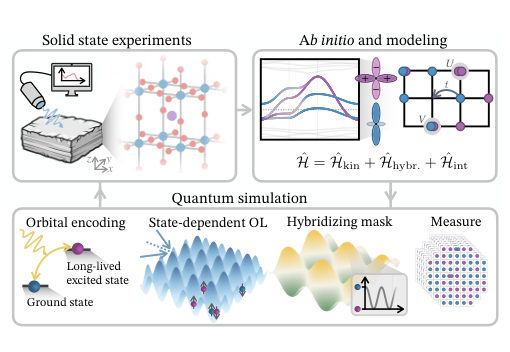
<figcaption class="paper-figure-caption"><b>Fig 1.</b> FIG. 1. Toolbox for material-realistic quantum sim- ulation. Lower panel: a quantum simulator that combines orbital encoding into long-lived clocks states of Sr, orbital- dependent optical potentials, spatially structured coherent coupling for symmetry-selective hybridization, and snapshot measurements. These ingredients enable the implementa- tion and controlled exploration of multi-orbital Hamiltoni- ans derived from electronic-structure calculations. Such a platform closes a loop between solid-state experiments (up- per left panel), first-principles modeling (upper right panel), and quantum simulation, in which experimentally constrained microscopic models are solved on a programmable...</figcaption>
</figure>
<figure class="paper-figure-card">
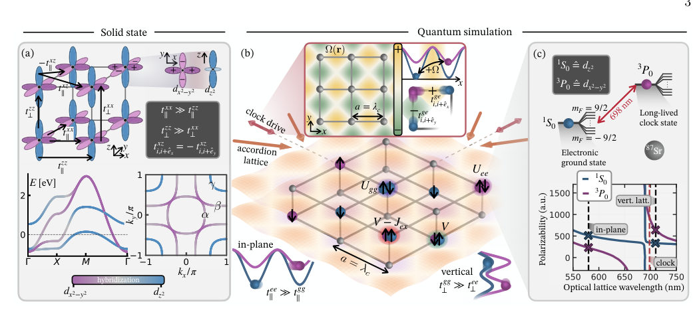
<figcaption class="paper-figure-caption"><b>Fig 2.</b> FIG. 2. Recipe for multi-orbital quantum simulation of the bilayer nickelate. (a) La3Ni2O7 under pressure realizes a tetragonal bilayer of Ni atoms, each contributing two eg orbitals, dx2−y2 and dz2. The orbital symmetry dictates the hopping hierarchy (txx ∥ ≫tzz ∥in plane, tzz ⊥≫txx ⊥across the bilayer) and a d-wave inter-orbital hybridization txz i,i+ˆex = −txz i,i+ˆey, producing the (non-interacting) band structure and α, β, γ Fermi pockets shown. (b) 87Sr in an accordion lattice of spacing a = λc (the clock transition wavelength) forms the in-plane square lattice; a vertical state-dependent superlattice forms the bilayer. On-site interactions Ugg, Uee, direct V , and Hund exchange Jex...</figcaption>
</figure>
<figure class="paper-figure-card">
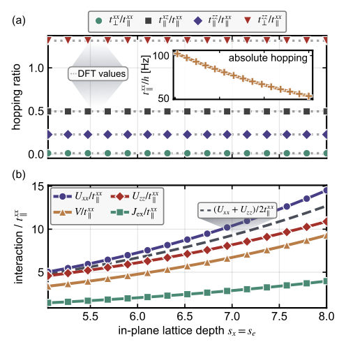
<figcaption class="paper-figure-caption"><b>Fig 3.</b> FIG. 3. Accessible parameter regimes of the bilayer- nickelate simulator. (a) Optimized hopping amplitudes, normalized to the dominant in-plane hopping txx ∥, as a func- tion of the in-plane lattice depth (in units of the recoil energy of the clock wavelength). At each depth, the trapping wave- length, clock-drive strength, and vertical superlattice depths are reoptimized self-consistently such that the target hopping structure (Tab. II) is maintained. Gray dotted lines indicate the target values from density functional theory; the inset shows the corresponding absolute hopping scale txx ∥/h. (b) On-site interaction parameters obtained from the converged three-dimensional Wannier orbitals....</figcaption>
</figure>
<figure class="paper-figure-card">
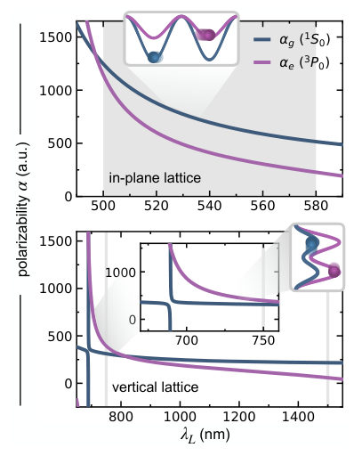
<figcaption class="paper-figure-caption"><b>Fig 4.</b> FIG. 4. State-dependent polarizability. The upper panel shows the in-plane wavelength range in which the e state is trapped more weakly than the g state. The lower panel shows the vertical-lattice wavelengths used in the bilayer construc- tion. The gray bands denote the optimization windows in our simulations.</figcaption>
</figure>
<figure class="paper-figure-card">
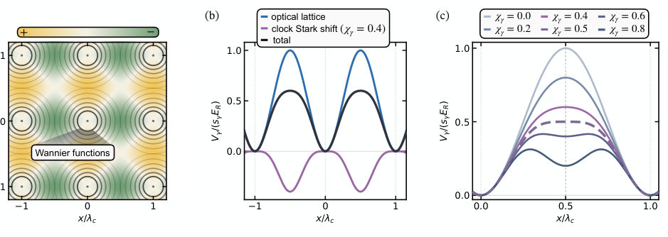
<figcaption class="paper-figure-caption"><b>Fig 5.</b> FIG. 5. Construction of the d-wave Rabi mask. (a) Structured Rabi mask m(r) = [cos(Qx) −cos(Qy)] for Q = 2π/λc. The atomic lattice is aligned such that the lattice sites coincide with nodes of the Rabi field; this way, neighboring x and y bonds pick up opposite Rabi signs. (b) Line cut along y = 0 through the state-dependent optical-lattice potential (blue), the off-resonant Stark potential generated by the clock beams (purple), and their sum (black). The same spatial clock field that produces the coherent hybridization therefore also lowers the NN tunneling barrier through its intensity profile. (c) Total line-cut potential for increasing clock-light strength, parametrized by χγ = 16vγ/sγ....</figcaption>
</figure>
</div>

<p><strong>Summary.</strong> This paper introduces a comprehensive quantum simulation architecture using alkaline-earth atoms to model the complex, multi-orbital physics found in correlated materials like nickelates. By combining various laser and lattice controls, the authors achieve programmable control over all necessary Hamiltonian terms, demonstrating a general route to simulate solid-state physics in an ultracold atom setting.</p>
<p><strong>Why it may be interesting.</strong> This work provides a concrete, general blueprint for realizing complex, multi-orbital Hamiltonians in ultracold atoms, bridging the gap between high-level condensed matter theory and programmable quantum hardware.</p>
<details>
<summary>Detailed structure</summary>
<p><strong>Main problem.</strong> The goal is to faithfully reproduce the complex, multi-orbital Hamiltonians of correlated quantum materials, such as bilayer nickelates, using programmable quantum simulators.</p>
<p><strong>Main result.</strong> The authors demonstrate an integrated architecture using fermionic alkaline-earth atoms that can programmatically control all necessary ingredients—including orbital-selective tunneling, multi-orbital Hubbard/Hund couplings, and crystal field splitting—to simulate these complex models.</p>
<p><strong>Method.</strong> The approach combines advanced atomic physics techniques (clock states, structured driving, Feshbach resonances) to engineer the effective Hamiltonian, which is then benchmarked against first-principles calculations from solid-state theory.</p>
<p><strong>Model / system.</strong> The system uses fermionic alkaline-earth atoms in an optical lattice to simulate the low-energy physics of correlated materials, specifically targeting the four-band Hamiltonian of bilayer nickelates. The simulation controls hopping hierarchies, interaction strengths ($U, J_H, V$), and orbital energy offsets independently.</p>
<p><strong>Key observables.</strong> Non-interacting band structure (e.g., $\alpha, eta, \gamma$ pockets), orbital-dependent hopping ratios, and the ability to reproduce microscopic parameters from first-principles modeling.</p>
<p><strong>Important parameters / regimes.</strong> The simulation requires independent control over hopping ratios ($t_{\parallel}/t_{\perp}$), interaction strengths ($U, J_H, V$), and crystal field splitting ($\Delta$).</p>
<p><strong>Assumptions / limitations.</strong> The method successfully encodes solid-state orbital symmetries into the effective Hamiltonian even when atoms are confined to simple $s$-wave Wannier orbitals. The realization requires a demanding combination of laser and lattice control.</p>
<p><strong>Figures summary.</strong> Figures illustrate the 'Toolbox' for simulation, mapping material requirements to atomic controls, and detail the specific hopping hierarchies and level schemes required to model the bilayer nickelate structure.</p>
<p><strong>Paper structure.</strong> The paper establishes the general goal of simulating material Hamiltonians, details the specific physical ingredients (orbital encoding, coupling, detuning) available in the AEA platform, and validates this capability by applying it to the highly demanding benchmark of the bilayer nickelate model.</p>
</details>
<details>
<summary>Abstract</summary>
<p>A long-term goal of quantum simulation is to faithfully reproduce the low-energy Hamiltonians of correlated quantum materials, establishing a direct connection between solid-state experiment, electronic-structure theory, and programmable many-body systems. Here, we introduce an integrated quantum-simulation architecture based on fermionic alkaline-earth atoms that enables programmable control over the key ingredients of multi-orbital material Hamiltonians. Long-lived clock states encode synthetic orbitals, their differential polarizabilities generate orbital-selective tunneling, and contact interactions provide multi-orbital Hubbard and Hund couplings. Spatially structured coherent driving on the ultra-narrow clock transition further realizes symmetry-selective inter-orbital hybridization, while the clock detuning independently controls orbital energy offsets. In this way, the spatial symmetries of solid-state orbitals can be encoded directly into the effective Hamiltonian, even though the atoms themselves remain in conventional $s$-wave Wannier orbitals of the lowest optical-lattice bands. We demonstrate the resulting integrated control using the four-band low-energy Hamiltonian of the bilayer nickelate La$_3$Ni$_2$O$_7$ as a demanding benchmark. Self-consistent calculations show that the microscopic parameters obtained from first-principles modeling can be reproduced within a single experimentally accessible lattice configuration and independently programmed over substantial parameter ranges. Our results establish a general route for translating material-derived multi-orbital Hamiltonians into programmable ultracold-atom quantum simulators.</p>
</details>
<p><sub><a href="#top">↑ back to top</a></sub></p>

<p><a id="paper-2610.10731"></a></p>
<h3 id="single-shot-magic-state-factories-for-quantum-ldpc-codes">⭐ <a href="http://arxiv.org/abs/2610.10731v1">Single-shot magic state factories for quantum LDPC codes</a></h3>
<p><strong>Highlighted author(s):</strong> Mikhail D. Lukin<br>
<strong>Authors:</strong> Varun Menon, Rohan Mehta, Andi Gu, Andrei C. Diaconu, Daniel Bochen Tan, Xiao Xiao, Michael J. Gullans, Qian Xu, Hengyun Zhou, Mikhail D. Lukin, J. Pablo Bonilla Ataides<br>
<strong>Type:</strong> both · <strong>Category:</strong> quantum information and computing · <strong>PDF:</strong> <a href="https://arxiv.org/pdf/2610.10731v1">https://arxiv.org/pdf/2610.10731v1</a><br>
<strong>Analysis basis:</strong> full PDF text, analyzed in chunks
<strong>Topic relevance:</strong> 🔥 <code>QC/QI experiment</code> <strong>4/5</strong> · <code>Rydberg arrays</code> <strong>2/5</strong></p>
<div class="figure-strip-hint">↔ Scroll figures horizontally</div>
<div class="paper-figures-scroll">
<figure class="paper-figure-card">
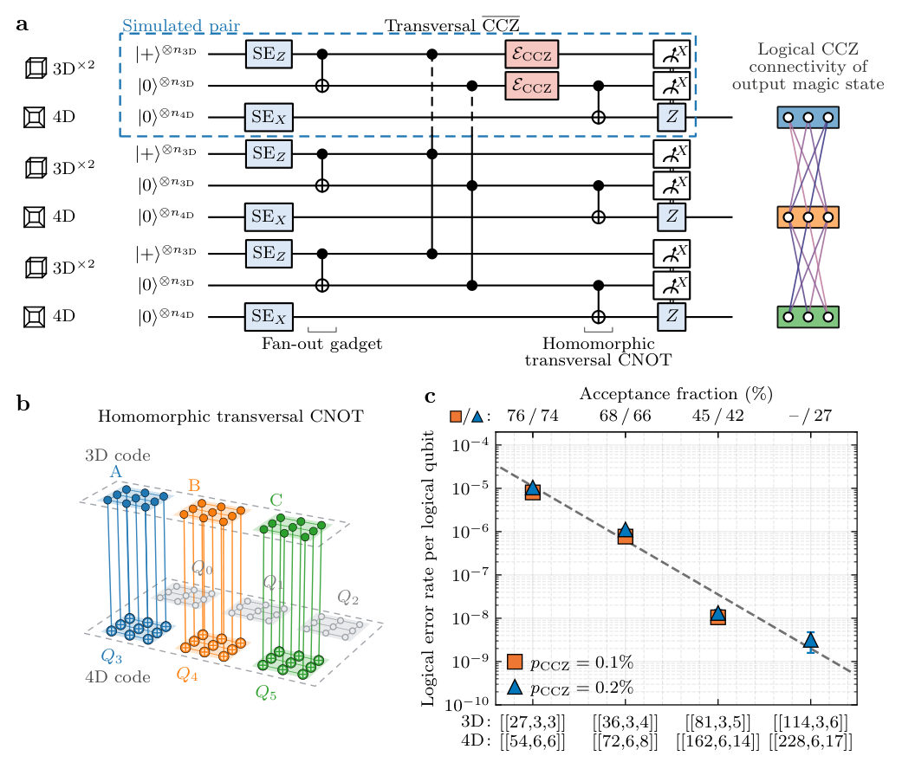
<figcaption class="paper-figure-caption"><b>Fig 1.</b> FIG. 1. Transversal dimension-jump magic state factory. (a) Three tricycle blocks are prepared in |+⟩and acted on by a transversal CCZ circuit using a fan-out gadget, producing the nine-qubit hypergraph state |det⟩shown on the right. The gadget pairs each block with an ancilla patch of the same code through one transversal layer of CNOTs, splitting the two CCZ layers across the two patches so that every qubit takes part in a single gate. A depth-1 homomorphic CNOT teleports the magic state into three paired quadcycle blocks prepared in |0⟩. Transversal X measurements of the tricycle blocks provide the teleportation outcomes and detector information used for postselection. The dashed box...</figcaption>
</figure>
<figure class="paper-figure-card">
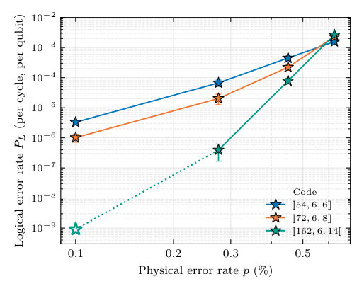
<figcaption class="paper-figure-caption"><b>Fig 2.</b> FIG. 2. Single-shot circuit-level performance of the quadcycle codes. Logical error rate per cycle per logical qubit versus physical error rate p for the [[54, 6, 6]], [[72, 6, 8]], and [[162, 6, 14]] quadcycle codes, from windowed memory simulations under circuit-level depolarizing noise. Decoding is single-shot: a sliding window spanning three syndrome- extraction rounds and advancing one round per step (W = 3, S = 1) solves for the most-likely error within each window, so a constant number of rounds suffices independent of the code distance. The open marker extrapolates the [[162, 6, 14]] curve to p = 10−3 using PL ∝pd/2 with d = 12 (its circuit- level distance upper bound). Error bars...</figcaption>
</figure>
<figure class="paper-figure-card">
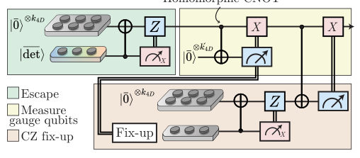
<figcaption class="paper-figure-caption"><b>Fig 3.</b> FIG. 3. Complete factory pipeline with downstream fault-tolerant gadgets. Only one of the three parallel sets of code blocks is shown. The escape stage abstracts Fig. 1, in which the magic state is teleported to three quadcycle blocks and postselected (not shown). Using ancillary quad- cycle codes and homomorphic CNOTs, we then perform a transversal measurement that effectively addresses a single logical qubit in the Z basis. As the ancillary quadcycle code is also single-shot state preparable, this measurement can be performed in constant depth. Then, depending on the logi- cal outcome, we modify the factory to transversally prepare a resource state for the required addressable CZ...</figcaption>
</figure>
<figure class="paper-figure-card">
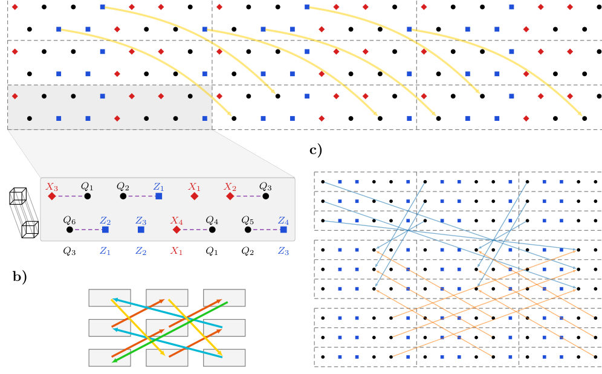
<figcaption class="paper-figure-caption"><b>Fig 4.</b> FIG. 4. Qubit placement and routing for the neutral-atom implementation. (a) Toric layout of a quadcycle code. Qubits are arranged into unit cells containing six data qubits, four X-check ancillae, and four Z-check ancillae. The correspond- ing tricycle cell, shown below, is identified with the lower row of the quadcycle cell. This shared layout allows the two codes to use the same routing patterns for their common stabilizer terms and aligns their data qubits for the homomorphic CNOT. The dashes inside the unit cell display which sectors are coupled for an A term. (b) Parallel atom rearrangement implementing the cyclic translation associated with the monomial xy. The translations are...</figcaption>
</figure>
<figure class="paper-figure-card">
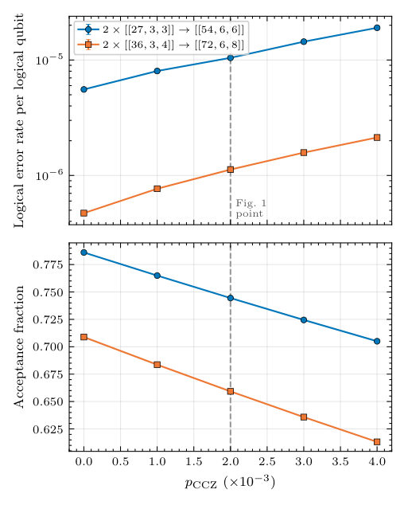
<figcaption class="paper-figure-caption"><b>Fig 5.</b> FIG. 5. Dependence of the factory on the CCZ error rate. Post-selected logical error rate per output logical qubit (top) and single-block acceptance fraction (bottom) for the 2 × [[27, 3, 3]] →[[54, 6, 6]] and 2 × [[36, 3, 4]] →[[72, 6, 8]] fac- tories, as a function of the CCZ error rate pCCZ, with all other operations held at depolarizing noise p = 10−3. The simulated CCZ noise is the single-qubit marginal of a three-qubit depo- larizing channel; this marginal is exact because each qubit participates in only one gate in the depth-1 transversal CCZ circuit. Error bars are binomial.</figcaption>
</figure>
</div>

<p><strong>Summary.</strong> This paper presents a novel, highly efficient 'magic state factory' designed for fault-tolerant quantum computation using quantum LDPC codes. It merges tricycle and quadcycle codes via a teleportation mechanism to generate high-fidelity magic states. The protocol is demonstrated on neutral-atom quantum computers, offering a practical, low-overhead pathway to scaling quantum computation.</p>
<p><strong>Why it may be interesting.</strong> The integration of advanced quantum error-correcting codes (qLDPC) with a physical implementation platform (neutral atoms) to solve a fundamental resource bottleneck (magic state generation) is highly relevant for experimental quantum computing.</p>
<details>
<summary>Detailed structure</summary>
<p><strong>Main problem.</strong> The core challenge is developing a space-time-efficient method to generate high-fidelity magic states required for fault-tolerant quantum computation using quantum LDPC codes.</p>
<p><strong>Main result.</strong> The authors propose a factory combining tricycle and quadcycle codes that achieves logical error rates as low as $10^{-9}$ with 10-40 times lower space-time cost than existing methods.</p>
<p><strong>Method.</strong> The approach uses an 'escape' mechanism to teleport postselected logical magic states from tricycle codes to more robust quadcycle codes via a depth-1 homomorphic CNOT.</p>
<p><strong>Model / system.</strong> The protocol is demonstrated on reconfigurable neutral-atom quantum computers, utilizing the algebraic structure of tricycle and quadcycle codes for state preparation and error correction.</p>
<p><strong>Key observables.</strong> Logical error rate (achieving $10^{-9}$), space-time cost (showing 10-40x improvement), and fidelity of generated CCZ states.</p>
<p><strong>Important parameters / regimes.</strong> Physical error rate ($p = 10^{-3}$), code distances ($d_{3D}$), and the number of available atoms/AODs.</p>
<p><strong>Assumptions / limitations.</strong> The analysis assumes a standard circuit-level noise model at $p = 10^{-3}$, and the efficiency relies on the shared algebraic structure between the two code types.</p>
<p><strong>Figures summary.</strong> Figures illustrate the 'Transversal dimension-jump magic state factory' process, showing the flow from tricycle to quadcycle blocks, and detail the single-shot error correction capabilities of the quadcycle codes.</p>
<p><strong>Paper structure.</strong> The paper first introduces the need for efficient magic state generation for qLDPC codes. It then details the combination of tricycle and quadcycle codes, the teleportation mechanism, and finally presents a concrete, end-to-end implementation using neutral atoms.</p>
</details>
<details>
<summary>Abstract</summary>
<p>Quantum low-density parity-check (qLDPC) codes can substantially reduce the qubit overhead of fault-tolerant quantum computation, but any useful architecture based on such codes also requires an efficient mechanism to implement non-Clifford gates in a fault-tolerant manner. We introduce a space-time-efficient magic state factory for high-rate qLDPC codes by combining the transversal non-Clifford gates of recently developed tricycle codes with single-shot four-dimensional balanced product quadcycle codes. The key ingredient is an efficient "escape" mechanism that teleports postselected logical magic states from tricycle codes to larger distance quadcycle codes. Under a standard circuit-level noise model at physical error rate $10^{-3}$, our factories produce $\mathrm{CCZ}$ states at logical error rates as low as $10^{-9}$ with 10-40 times lower space-time cost than state-of-the-art magic state generation methods. The resulting states are directly encoded in high-rate blocks suitable for computation. We identify the quadcycle codes by an AI-assisted search and show that they can serve as excellent memories capable of single-shot error correction. Finally, we present a concrete implementation of the entire factory with highly efficient atom transport on reconfigurable neutral-atom quantum computers. Together, these results provide an end-to-end, practical protocol for producing and utilizing high-fidelity magic states within a high-rate qLDPC architecture, with the lowest space-time cost to date.</p>
</details>
<p><sub><a href="#top">↑ back to top</a></sub></p>

<p><a id="paper-2610.10694"></a></p>
<h3 id="competing-symmetry-breaking-and-topology-in-quantum-spin-chains">⭐ <a href="http://arxiv.org/abs/2610.10694v1">Competing symmetry breaking and topology in quantum spin chains</a></h3>
<p><strong>Highlighted author(s):</strong> Anthony Rey<br>
<strong>Authors:</strong> Anthony Rey, Ömer M. Aksoy, Claudio Chamon, Akira Furusaki, Christopher Mudry<br>
<strong>Type:</strong> theory · <strong>Category:</strong> strongly correlated electrons · <strong>PDF:</strong> <a href="https://arxiv.org/pdf/2610.10694v1">https://arxiv.org/pdf/2610.10694v1</a><br>
<strong>Analysis basis:</strong> full PDF text, analyzed in chunks
<strong>Topic relevance:</strong> <code>analog quantum simulation</code> <strong>3/5</strong></p>
<div class="figure-strip-hint">↔ Scroll figures horizontally</div>
<div class="paper-figures-scroll">
<figure class="paper-figure-card">
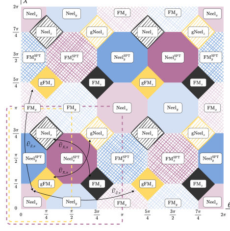
<figcaption class="paper-figure-caption"><b>Fig 1.</b> FIG. 1. Phase diagram of Hamiltonian b H(b) I (θ, λ) in Eq. (2.2c). Phase boundaries are not drawn to scale.</figcaption>
</figure>
<figure class="paper-figure-card">
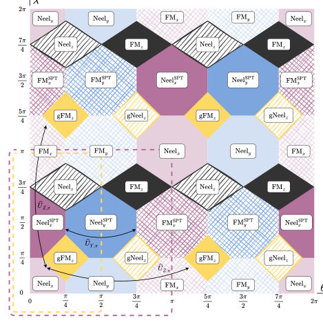
<figcaption class="paper-figure-caption"><b>Fig 2.</b> FIG. 2. Phase diagram of Hamiltonian b H(b) II (θ, λ) in Eq. (2.2d). Phase boundaries are not drawn to scale.</figcaption>
</figure>
<figure class="paper-figure-card">
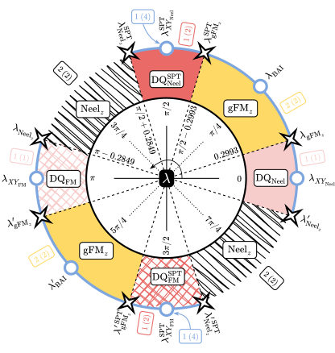
<figcaption class="paper-figure-caption"><b>Fig 3.</b> FIG. 3. Phase diagram of Hamiltonian b H(b) U(1)(λ) defined by Eq. (1.3) as a function of the angle λ ∈[0, 2π] along the unit circle colored in black. We use a colored pie chart with eight sectors to characterize the four long-range-ordered phases (1.2) and the four lines of deconfined-quantum-critical points (DQCPs) (1.5) along the cut θ = π/4 in Fig. 1 or 2. Integrable points (tricritical points) are denoted by circles (stars) on the outer perimeter of the pie chart. Intervals col- ored in blue on the outer perimeter of the pie chart refer to gapless phases of matter described by a conformal field theory (CFT) with central charge c = 1. There are six such inter- vals, each of which is...</figcaption>
</figure>
<figure class="paper-figure-card">
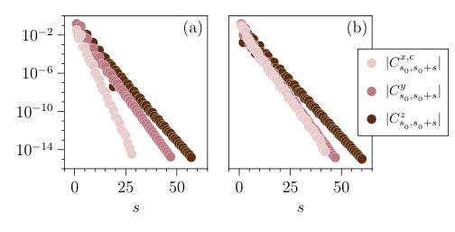
<figcaption class="paper-figure-caption"><b>Fig 4.</b> FIG. 4. The case of OBCs. (a) Dependence on s given s0 of the absolute value of the spin-spin correlation func- tions Cx,c s0,s0+s[Ψ0], Cy s0,s0+s[Ψ0], and Cz s0,s0+s[Ψ0], defined in Eq. (3.3), computed using the DMRG (χ = 128) for the ground state |Ψ0⟩of Hamiltonian b H(1) I in Eq. (2.2c) at (θ, λ) = (π/10, π/10), with s0 = 2N/2 −2N/4 and 2N = 256. (b) Same as (a) for Hamiltonian b H(1) II .</figcaption>
</figure>
<figure class="paper-figure-card">
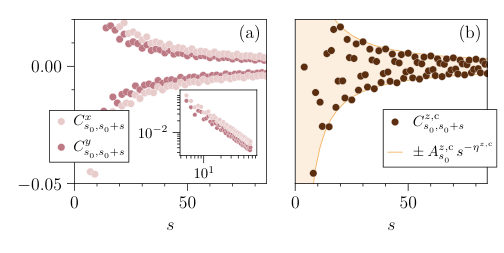
<figcaption class="paper-figure-caption"><b>Fig 5.</b> FIG. 5. The case of OBCs. (a) Dependence on s given s0 for the spin-spin correlations Cx s0,s0+s and Cy s0,s0+s, de- fined in Eq. (3.3a), computed using DMRG (χ = 128) for the ground state |Ψ0⟩of Hamiltonian b H(1) II in Eq. (2.2d) at (θ, λ) = (π/4 −π/40, π/4 −π/40), with s0 = 2N/2 −2N/4 and 2N = 256. The inset illustrates the absolute values of Cx s0,s0+s and Cy s0,s0+s in a log-log scale to extract the expo- nents ηx = 1.07 ± 0.01 and ηy = 1.08 ± 0.02, respectively, using Eq. (3.23). (b) Dependence on s given s0 for the spin- spin correlations Cz,c s0,s0+s, defined in Eq. (3.3b), computed using DMRG (χ = 128) for the ground state |Ψ0⟩of Hamilto- nian b H(1) II in Eq. (2.2d) at (θ, λ) =...</figcaption>
</figure>
</div>

<p><strong>Summary.</strong> This work explores how competing symmetry breaking and topological order manifest in 1D quantum spin chains. By mapping out the phase diagram, the authors identify multiple ordered and gapless phases, revealing exotic critical behavior. The research highlights unconventional mechanisms where symmetry and topology cooperate to generate complex quantum critical points.</p>
<p><strong>Why it may be interesting.</strong> The findings on symmetry-enriched criticality and the breakdown of naive symmetry theorems in 1D systems provide deep insights into how topology and symmetry constrain quantum ground states, relevant for understanding exotic phases in correlated materials.</p>
<details>
<summary>Detailed structure</summary>
<p><strong>Main problem.</strong> The paper investigates the complex interplay between spontaneous symmetry breaking and symmetry-protected topology in one-dimensional quantum spin-1/2 systems.</p>
<p><strong>Main result.</strong> The system exhibits a rich phase diagram featuring six distinct gapped phases, two gapless phases, and exotic critical points, including a Lifshitz tricritical point that breaks continuous symmetry unexpectedly.</p>
<p><strong>Method.</strong> The study combines theoretical analysis (e.g., Tomonaga-Luttinger liquid theory) with numerical techniques like DMRG and exact diagonalization to map out the phase diagram.</p>
<p><strong>Model / system.</strong> The model consists of one-dimensional quantum spin-1/2 lattice Hamiltonians possessing $\mathbb{Z}_{2}\times\mathbb{Z}_{2}\times\mathbb{Z}_{2}$ symmetry. The analysis is performed on the coupling space $T^2$.</p>
<p><strong>Key observables.</strong> Symmetry-breaking patterns (FM, Neel), topological attributes (SPT phases), gap status, central charge ($c=1$), and ground-state degeneracy.</p>
<p><strong>Important parameters / regimes.</strong> Coupling parameters $(\theta, \lambda)$ defining the Hamiltonian, and system size $2N$ for finite-size scaling analysis.</p>
<p><strong>Assumptions / limitations.</strong> The classification of SPT phases relies on the change in ground-state degeneracy with boundary conditions; the analysis involves approximations for sums and limits for large system sizes.</p>
<p><strong>Figures summary.</strong> Figures 1, 2, and 3 depict the phase diagrams in the coupling space $T^2$ and along specific cuts, illustrating the various ordered, topological, and critical regions.</p>
<p><strong>Paper structure.</strong> The paper systematically maps the phase diagram by analyzing fixed points, constructing the phase diagram across the $T^2$ coupling space, and then performing detailed theoretical analyses of the critical lines and boundary physics.</p>
</details>
<details>
<summary>Abstract</summary>
<p>We investigate how spontaneous symmetry breaking and symmetry-protected topology compete and cooperate in one-dimensional quantum spin-1/2 systems. We introduce two families of local Hamiltonians with $\mathbb{Z}^{\,}_{2}\times\mathbb{Z}^{\,}_{2}\times\mathbb{Z}^{T}_{2}$ symmetry which host a zoo of broken-symmetry phases with and without gapless boundary spins, namely, six long-range-ordered gapped phases that differ by their $\mathbb{Z}^{\,}_{2}$-symmetry-breaking patterns (FM$^{\,}_{x,y,z}$ and Neel$^{\,}_{x,y,z}$), their partner symmetry-protected topological phases (FM$^{\mathrm{SPT}}_{x,y}$ and Neel$^{\mathrm{SPT}}_{x,y}$), and two gapless phases (gFM$^{\,}_{z}$ and gNeel$^{\,}_{z}$) with incommensurate $\mathbb{Z}^{T}_{2}$-breaking magnetic long-range order and central charge $\mathsf{c}=1$. Direct transitions between competing gapped phases can be continuous or weakly first order. We demonstrate that continuous phase transition lines have exotic critical properties. For example, a line of deconfined quantum critical points (between the Neel$^{\,}_{x}$ and Neel$^{\,}_{y}$ phases) described by Tomonaga-Luttinger liquid theory is terminated by the gFM$^{\,}_{z}$ phase at a Lifshitz tricritical point which exhibits spontaneous breaking of the continuous U(1) symmetry despite the locality and one-dimensionality of the Hamiltonian, contrary to a naive expectation from the Hohenberg-Mermin-Wagner-Coleman theorem. Furthermore, critical lines between symmetry-protected topological phases with different $\mathbb{Z}^{\,}_{2}$-symmetry breaking (e.g., Neel$^{\mathrm{SPT}}_{x}$ and Neel$^{\mathrm{SPT}}_{y}$) additionally retain low-energy boundary degrees of freedom, realizing symmetry-enriched criticality (or a gapless SPT phase). Our results reveal unconventional mechanisms by which competing symmetry breaking and topology generate ordered critical phases and multicriticality.</p>
</details>
<p><sub><a href="#top">↑ back to top</a></sub></p>

<p><a id="paper-2610.12348"></a></p>
<h3 id="constructing-large-and-structured-decoherence-free-subspaces-in-hybrid-quantum-systems"><a href="http://arxiv.org/abs/2610.12348v1">Constructing Large and Structured Decoherence-Free Subspaces in Hybrid Quantum Systems</a></h3>
<p><strong>Authors:</strong> Catalin-Mihai Halati, Tony Jin, Roderich Moessner<br>
<strong>Type:</strong> theory · <strong>Category:</strong> other · <strong>PDF:</strong> <a href="https://arxiv.org/pdf/2610.12348v1">https://arxiv.org/pdf/2610.12348v1</a><br>
<strong>Analysis basis:</strong> full PDF text, analyzed in chunks
<strong>Topic relevance:</strong> 🔥 <code>correlated / nonlocal dissipation</code> <strong>4/5</strong> · <code>analog quantum simulation</code> <strong>3/5</strong> · <code>driven-dissipative phase transition</code> <strong>3/5</strong> · <code>methods for driven-dissipative</code> <strong>3/5</strong> · <code>Tavis-Cummings &amp; cavity-many-emitter</code> <strong>2/5</strong> · <code>non-equilibrium universality</code> <strong>2/5</strong> · <code>Keldysh / 2PI / non-Gaussian methods</code> <strong>1/5</strong> · <code>quantum measurements</code> <strong>1/5</strong></p>
<div class="figure-strip-hint">↔ Scroll figures horizontally</div>
<div class="paper-figures-scroll">
<figure class="paper-figure-card">
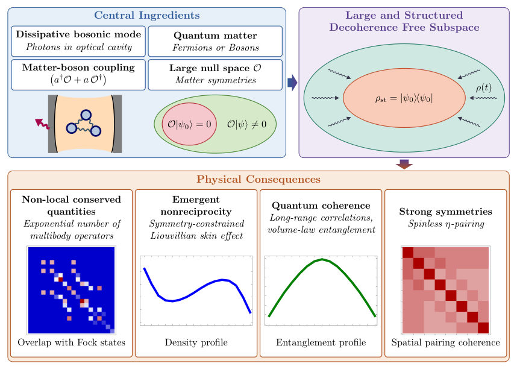
<figcaption class="paper-figure-caption"><b>Fig 1.</b> FIG. 1: Sketch of the central ingredients we employ in our framework to construct large and structured decoherence-free subspaces, and the main physical consequences. We depict both the generic ingredients and the results obtained for the coupling between the cavity field to a directed tunneling operator. The correspondence between these ingredients and the construction of the decoherence-free subspace is outlined in the extended summary, Sec. II. The lower panels sketch the main consequences: an exponential number of non-local conserved quantities, exhibiting a finite overlap with a large number of Fock states; nonreciprocal dynamics giving rise to a many-body Liouvillian skin effect in...</figcaption>
</figure>
<figure class="paper-figure-card">
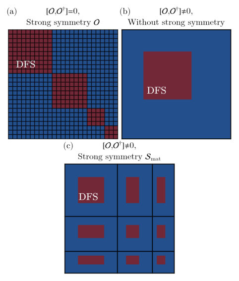
<figcaption class="paper-figure-caption"><b>Fig 2.</b> FIG. 2: Sketches of the structure of the decoherence-free subspaces (DFS) inside the Hilbert space of the matter den- sity matrices, for the three cases discussed in Sec. III A. The Hilbert space of the matter density matrices is sketched by a two-dimensional square for which the horizontal and verti- cal directions label the ket and bra wavefunctions. The black grid represents the subspace structure given by the presence of a strong symmetry. Red depicts the subspaces forming the DFS and blue the matter states with a finite lifetime. The photonic states are not considered in this sketch.</figcaption>
</figure>
<figure class="paper-figure-card">
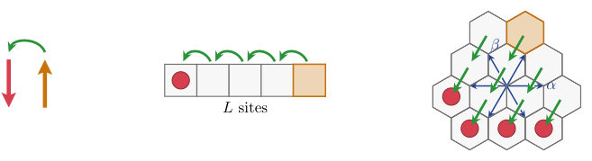
<figcaption class="paper-figure-caption"><b>Fig 3.</b> FIG. 3: Different physical system one may consider depending on the representation of the Lie algebra O belongs to. We represent here only the single-particle sector which has a simple null eigenspace structure. A complex structure with entanglement and quantum correlations emerges in the many-body case, e.g. Fig. 4 and Fig. 5. (a) The simplest example the spin 1/2 irreducible representation of sl(2), discussed Sec. IV B. Although the null eigenspace is trivial for a single-particle –just the |−⟩state–, the many-body null space for N spins grows exponentially and has a rich structure, Fig. 4. (b) Going to higher weight, i.e. higher spin representation of sl(2), amounts to increase the...</figcaption>
</figure>
<figure class="paper-figure-card">
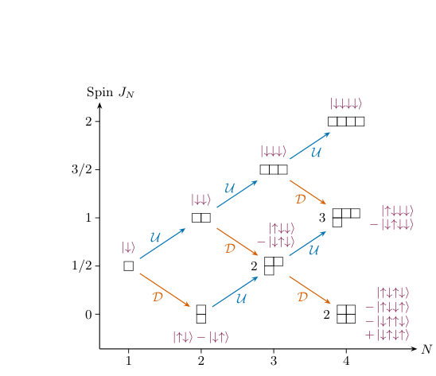
<figcaption class="paper-figure-caption"><b>Fig 4.</b> FIG. 4: Null eigenvectors for the case of the spin 1/2. Under the condition that the total spin can not be negative, the up U, Eq. (10), and down D, Eq. (11), operations respectively increase or decrease the spin of the representation by 1</figcaption>
</figure>
<figure class="paper-figure-card">
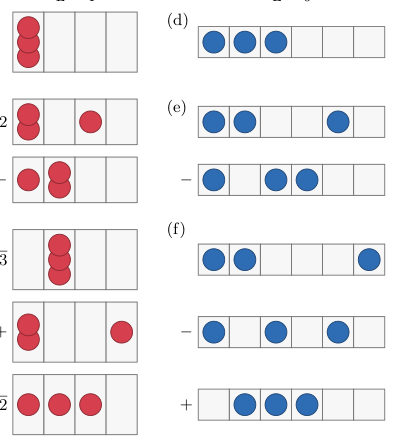
<figcaption class="paper-figure-caption"><b>Fig 5.</b> FIG. 5: Sketch of the null eigenvectors O, Eq. (12), for three quantum particles in L sites, of either bosonic, or fermionic, statistics. Panels (a) and (d) sketch the fully localized states for bosons and fermions, while the other examples depict su- perpositions between different Fock states.</figcaption>
</figure>
</div>

<p><strong>Summary.</strong> This paper presents a theoretical framework to engineer highly structured decoherence-free subspaces in open quantum systems by coupling matter to a dissipative bath. By leveraging representation theory of Lie algebras, the authors construct operators that enforce global constraints, leading to steady states with exotic symmetries and correlations. This method offers a controlled way to harness non-reciprocity and engineer complex quantum behavior in light-matter interactions.</p>
<p><strong>Why it may be interesting.</strong> This work provides a powerful, systematic recipe for controlling quantum coherence in realistic, dissipative open systems, bridging concepts from group theory, quantum optics, and many-body physics.</p>
<details>
<summary>Detailed structure</summary>
<p><strong>Main problem.</strong> The paper develops a general framework to construct large and structured decoherence-free subspaces (DFSs) in open quantum systems.</p>
<p><strong>Main result.</strong> They show that by coupling matter to a dissipative bosonic mode, one can engineer DFSs whose symmetries and properties are dictated by underlying Lie algebraic structures, leading to exotic quantum correlations.</p>
<p><strong>Method.</strong> The construction relies on identifying 'matter null states' imposed by dissipation, utilizing representation theory of Lie algebras to build the necessary operators.</p>
<p><strong>Model / system.</strong> The model is a hybrid quantum system coupling quantum matter (fermions or bosons) to a dissipative bosonic mode, exemplified by coupling to a lossy optical cavity and a directed tunneling operator.</p>
<p><strong>Key observables.</strong> Long-range kinetic correlations, volume-law entanglement, symmetry-constrained Liouvillian skin effect, and the number of steady states.</p>
<p><strong>Important parameters / regimes.</strong> The structure of the underlying Lie algebra (e.g., $\mathfrak{sl}(2,\mathbb{C})$) and the non-reciprocal nature of the coupling.</p>
<p><strong>Assumptions / limitations.</strong> The construction assumes the ability to choose an operator $O$ whose symmetries are distinct from those of the full Liouvillian dynamics.</p>
<p><strong>Figures summary.</strong> Figures sketch the central ingredients, including the coupling mechanism, the resulting DFS, and evidence of non-local conserved quantities and the Liouvillian skin effect.</p>
<p><strong>Paper structure.</strong> The paper establishes the general framework, details the mathematical construction using Lie algebras, applies it to specific physical examples (like directed tunneling), and validates the results using analytical derivations and time-dependent MPS simulations.</p>
</details>
<details>
<summary>Abstract</summary>
<p>We develop a framework to construct large decoherence-free subspaces with a non-trivial structure. The construction is based on hybrid quantum systems in which quantum matter is coupled to a dissipative bosonic mode. Dissipation imposes a global constraint on the matter by selecting the matter null states in the long-time limit. The decoherence-free subspaces spanned by matter null states can exhibit exotic quantum properties and emergent symmetries that do not characterize the full Liouvillian dynamics. We show how to construct many-body operators with physically interesting null states by employing representation theory of Lie algebras. This approach allows us to choose models based on their underlying algebraic structure. We consider explicitly the example of coupling a lossy optical cavity to the directed tunneling operator of quantum particles in one-dimension. In this case, the symmetries of the decoherence-free subspace originate in an $\mathfrak{sl}(2,\mathbb{C})$ algebra, leading to an exponentially large number of steady states. We characterize the null states for both fermionic and bosonic particles, employing analytical and numerical methods. The states exhibit several properties that underline their complex quantum nature: long-range kinetic correlations and volume-law entanglement. The nonreciprocal nature of the directed tunneling dynamics leads to the emergence in the many-body regime of a symmetry-constrained Liouvillian skin effect. The open light-matter system exhibits a strong symmetry stemming from spinless $η$-pairing algebras. We show how the non-trivial properties of the long-times states emerge in the dissipative dynamics from generic initial states, by performing time-dependent matrix product state simulations. Our framework opens avenues for dissipatively engineering complex quantum correlations and harnessing nonreciprocity in a controlled manner.</p>
</details>
<p><sub><a href="#top">↑ back to top</a></sub></p>

<p><a id="paper-2610.11350"></a></p>
<h3 id="magnonic-cavity-enhanced-quantum-magnetometry-with-nitrogen-vacancy-centre-ensembles"><a href="http://arxiv.org/abs/2610.11350v1">Magnonic cavity-enhanced quantum magnetometry with nitrogen-vacancy centre ensembles</a></h3>
<p><strong>Authors:</strong> Nikhil Kumar<br>
<strong>Type:</strong> theory · <strong>Category:</strong> other · <strong>PDF:</strong> <a href="https://arxiv.org/pdf/2610.11350v1">https://arxiv.org/pdf/2610.11350v1</a><br>
<strong>Analysis basis:</strong> full PDF text, analyzed in chunks
<strong>Topic relevance:</strong> 🔥 <code>Tavis-Cummings &amp; cavity-many-emitter</code> <strong>4/5</strong> · <code>analog quantum simulation</code> <strong>3/5</strong> · <code>methods for driven-dissipative</code> <strong>2/5</strong> · <code>quantum measurements</code> <strong>2/5</strong> · <code>quantum optics experiment</code> <strong>2/5</strong> · <code>QC/QI experiment</code> <strong>1/5</strong> · <code>correlated / nonlocal dissipation</code> <strong>1/5</strong> · <code>driven-dissipative phase transition</code> <strong>1/5</strong></p>
<div class="figure-strip-hint">↔ Scroll figures horizontally</div>
<div class="paper-figures-scroll">
<figure class="paper-figure-card">
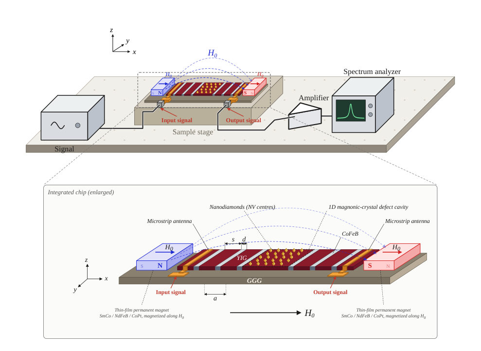
<figcaption class="paper-figure-caption"><b>Fig 1.</b> Fig. 1 Schematic of the proposed on-chip magnonic-crystal/NV-centre device and its measurement setup. Top: the integrated chip is mounted on a sample stage. A microwave signal generator feeds the input microstrip antenna through an SMA connector (input signal). Spin waves launched by the antenna propagate along x through the magnonic crystal; the output microstrip antenna detects them inductively (output signal), and the spectrum analyser amplifies and records the transmission spectrum. No external electromagnet is required. Bottom (enlarged): the device is a one-dimensional magnonic crystal formed by YIG segments of length s separated by CoFeB stripes of width d (lattice constant a = s +...</figcaption>
</figure>
<figure class="paper-figure-card">
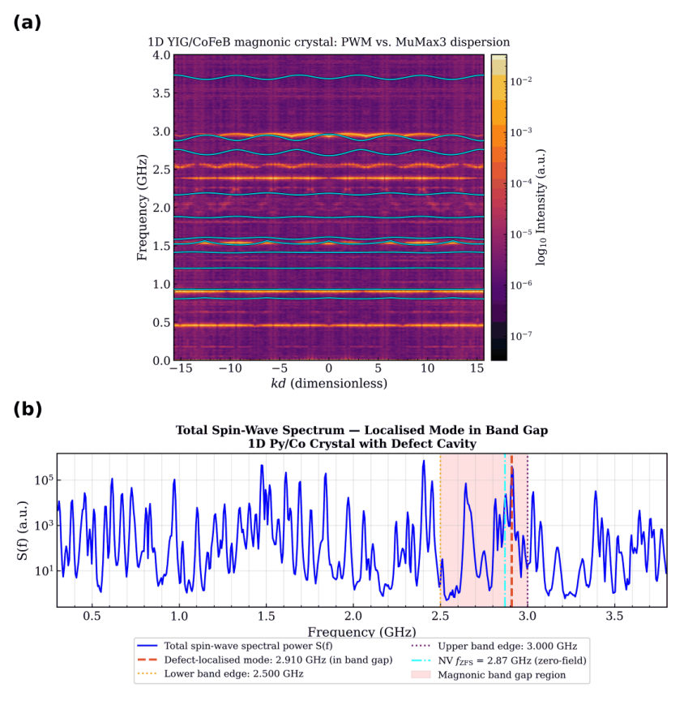
<figcaption class="paper-figure-caption"><b>Fig 2.</b> Fig. 2 Band structure and the defect-localised mode. (a) Micromagnetically simulated dispersion of the pristine 1D YIG/- CoFeB crystal (colour map, log10 intensity of the space–time Fourier transform of the ring-down response versus normalised Bloch wave vector), overlaid without adjustable parameters on the independently computed plane-wave bands (cyan curves). (b) Total spin-wave spectral power S(f) of the crystal with the defect, showing the magnonic band gap (shaded, 2.5–3.0 GHz) and the single defect-localised mode at 2.910 GHz (red dashed line) just above the NV zero-field splitting at 2.87 GHz (cyan dash-dotted line).</figcaption>
</figure>
<figure class="paper-figure-card">
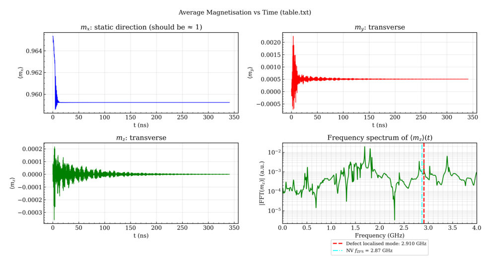
<figcaption class="paper-figure-caption"><b>Fig 3.</b> Fig. 3 Magnetisation dynamics after broadband excitation. Volume-averaged magnetization components ⟨mx⟩, ⟨my⟩and ⟨mz⟩versus time after the broadband sinc pulse applied uniformly across the device. Bottom right: Fourier spectrum of ⟨mz(t)⟩, showing the defect-localised resonance at 2.910 GHz (red dashed line) close to the NV zero-field splitting at 2.87 GHz (cyan dash- dotted line).</figcaption>
</figure>
<figure class="paper-figure-card">
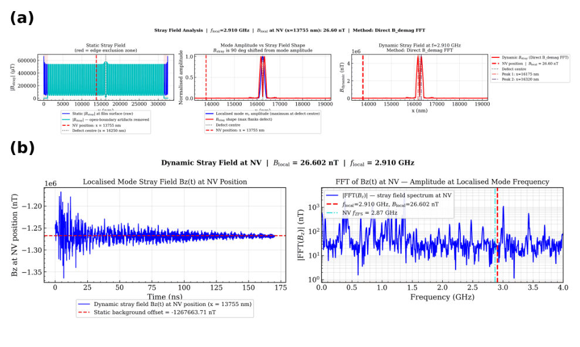
<figcaption class="paper-figure-caption"><b>Fig 4.</b> Fig. 4 Localised mode and its dynamic field at the NV site. (a) Left: static |Bstray| along the device, with edge-exclusion zones shaded. Middle: normalised localised-mode mz amplitude (blue) and dynamic stray-field envelope (red), showing the ≈90◦</figcaption>
</figure>
<figure class="paper-figure-card">
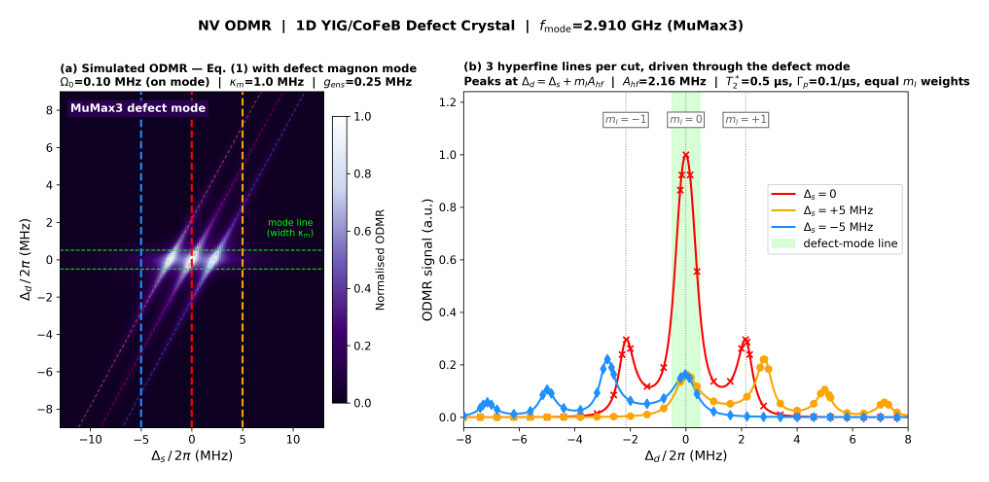
<figcaption class="paper-figure-caption"><b>Fig 5.</b> Fig. 5 Simulated ODMR spectrum of the NV ensemble driven through the defect magnon mode. (a) Normalised ODMR signal versus spin detuning ∆s/2π and drive detuning ∆d/2π, both referred to the defect-mode frequency fmode = 2.910 GHz, from the steady state of the Lindblad master equation [Eqs. (1)–(2)] with the defect mode included and the drive filtered by the mode line [Eq. (3)]. Dashed lines: hyperfine resonance conditions ∆d = ∆s + mIAhf (mI = +1, 0, −1 in orange, red and blue). Green dashed lines: defect-mode line, |∆d| ≤κm/2. Vertical dashed lines: positions of the cuts in (b). (b) Cuts at ∆s/2π = 0 and ±5 MHz; shaded band, defect-mode line. Parameters: Ω0/2π = 0.10 MHz (on the mode...</figcaption>
</figure>
</div>

<p><strong>Summary.</strong> The authors propose a novel, chip-scale magnetometer using NV centers coupled to a defect-localized spin-wave mode in a magnonic crystal. By modeling the system dynamics using quantum master equations and analyzing the resulting homodyne response, they predict a substantial enhancement in magnetic field sensitivity. This work demonstrates a pathway to integrate quantum sensing with solid-state magnonics for practical quantum technology.</p>
<p><strong>Why it may be interesting.</strong> This work is highly relevant as it combines cavity QED principles (cavity enhancement, coupling to quantum emitters) with solid-state magnonics, providing a roadmap for next-generation quantum sensors.</p>
<details>
<summary>Detailed structure</summary>
<p><strong>Main problem.</strong> To develop a highly sensitive, chip-scale quantum magnetometer by coupling Nitrogen-Vacancy (NV) center ensembles to a passive magnonic cavity.</p>
<p><strong>Main result.</strong> The projected sensitivity reaches 72 pT/$\sqrt{\text{Hz}}$ by combining the three hyperfine-resolved edges, representing a significant enhancement over single-resonance measurements.</p>
<p><strong>Method.</strong> The system dynamics are modeled using a Tavis-Cummings Hamiltonian coupled to a Lindblad master equation, analyzed via both ODMR and homodyne readout techniques.</p>
<p><strong>Model / system.</strong> The platform uses a 1D YIG/CoFeB magnonic crystal with a structural defect creating a passive cavity mode. NV ensembles are coupled to this mode, which is biased by integrated permanent magnets.</p>
<p><strong>Key observables.</strong> Hyperfine-resolved optically detected magnetic resonance (ODMR) spectrum and dispersive homodyne response ($\text{Re}\langle a \rangle$).</p>
<p><strong>Important parameters / regimes.</strong> Optimal coupling strength ratio ($g_{\text{ens}}/2\pi \approx 0.2$-$0.4 \text{ MHz}$); thermal limits (e.g., 1.7 pT/$\sqrt{\text{Hz}}$).</p>
<p><strong>Assumptions / limitations.</strong> The sensitivity calculation relies on combining independent estimates in quadrature and assumes the system operates in a regime where the coupling is strong enough to yield measurable spectral features.</p>
<p><strong>Figures summary.</strong> Figures illustrate the band structure showing the defect-localized mode, the local dipolar field profile at the NV site, and the resulting ODMR/homodyne spectra showing multiple steep edges.</p>
<p><strong>Paper structure.</strong> The paper progresses from characterizing the magnonic cavity mode via micromagnetics to developing the coupled quantum model (Tavis-Cummings/Lindblad) and finally calculating the enhanced sensitivity using both ODMR and homodyne readout formalisms.</p>
</details>
<details>
<summary>Abstract</summary>
<p>Nitrogen-vacancy (NV) centre ensembles are leading room-temperature magnetometers, but their sensitivity is usually extracted from a single resonance and relies on external microwave and bias-field hardware. This work proposes a chip-scale NV magnetometer built around a one-dimensional YIG/CoFeB magnonic crystal, in which a single structural defect forms a passive magnonic cavity and integrated permanent magnets supply the bias field. Micromagnetic simulations show a defect-localised spin-wave mode at 2.910 GHz inside the 2.5-3.0 GHz magnonic band gap, 40 MHz from the NV zero-field splitting, with a band structure that matches an independent plane-wave calculation. A Tavis-Cummings/Lindblad model in which the microwave reaches the NV ensemble through this mode predicts a hyperfine-resolved optically detected magnetic resonance spectrum that is strong only within the mode linewidth, and a dispersive homodyne response with one steep edge per $^{14}$N hyperfine line. The master-equation solutions agree with the closed-form homodyne steady state ($R^2 > 0.9999$) and with an approximate analytic ODMR theory (peak positions within 0.012 MHz). For a critically coupled readout with room-temperature electronics, combining the three edges gives a projected sensitivity of 93 pT/$\sqrt{\rm Hz}$, a $\sqrt{3}$-fold gain over the best single edge. Mapping the sensitivity against the NV-magnon coupling reveals an optimum near $g_{\rm ens}/2π\approx 0.2$-$0.4$ MHz, where it reaches 72 pT/$\sqrt{\rm Hz}$ for a 0.64 MHz spin linewidth and 19 pT/$\sqrt{\rm Hz}$ for 0.17 MHz, with thermal limits of 6.6 and 1.7 pT/$\sqrt{\rm Hz}$. The antenna-mode coupling, the NV-magnon coupling and the spin linewidth are therefore the main design levers.</p>
</details>
<p><sub><a href="#top">↑ back to top</a></sub></p>

<p><a id="paper-2610.10697"></a></p>
<h3 id="on-linearity-or-non-linearity-in-machine-learning-for-quantum-chaotic-dynamics"><a href="http://arxiv.org/abs/2610.10697v1">On linearity or non-linearity in machine learning for quantum chaotic dynamics</a></h3>
<p><strong>Authors:</strong> Francesco Perciavalle, Agostino Gallo, Francesco Plastina, Gianluigi Greco, Nicola Lo Gullo, Carlo Adornetto<br>
<strong>Type:</strong> theory · <strong>Category:</strong> statistical mechanics · <strong>PDF:</strong> <a href="https://arxiv.org/pdf/2610.10697v1">https://arxiv.org/pdf/2610.10697v1</a><br>
<strong>Analysis basis:</strong> full PDF text, analyzed in chunks
<strong>Topic relevance:</strong> 🔥 <code>analog quantum simulation</code> <strong>4/5</strong> · <code>Rydberg arrays</code> <strong>3/5</strong> · <code>quantum measurements</code> <strong>3/5</strong> · <code>scars &amp; prethermalization</code> <strong>3/5</strong> · <code>methods for driven-dissipative</code> <strong>2/5</strong></p>
<div class="figure-strip-hint">↔ Scroll figures horizontally</div>
<div class="paper-figures-scroll">
<figure class="paper-figure-card">
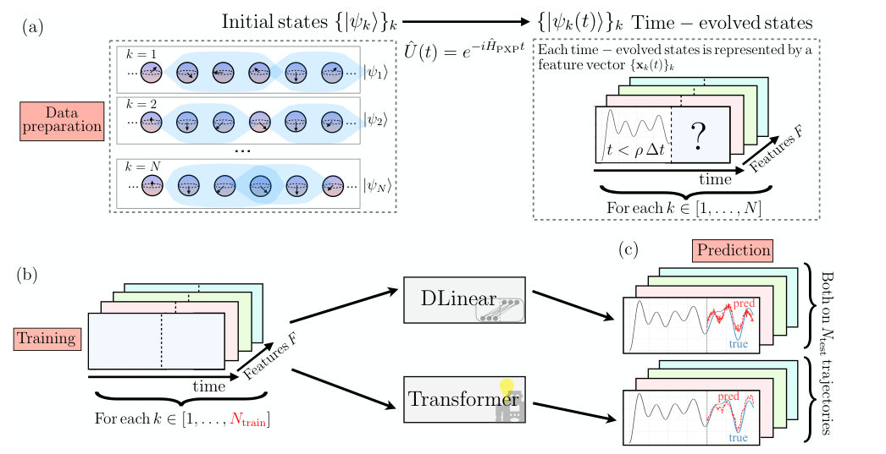
<figcaption class="paper-figure-caption"><b>Fig 1.</b> Fig. 1 Schematic illustration of the forecasting protocol, consisting of three stages: data preparation [panel (a)], training [panel (b)], and prediction [panel (c)]. Data preparation (a): A set of N initial quantum states, {|ψk⟩}N k=1, of an L-qubit system is prepared. Each state is evolved under the Hamiltonian ˆHPXP, generating N quantum trajectories, {|ψk(t)⟩}N k=1. At each time t, each trajectory is represented by a feature vector xk(t) comprising local magnetizations and connected two-point correlations, for a total of F = L(L + 1)/2 features. For each trajectory, the first ρ time steps define the input sequence, while the subsequent τ time steps constitute the target sequence....</figcaption>
</figure>
<figure class="paper-figure-card">
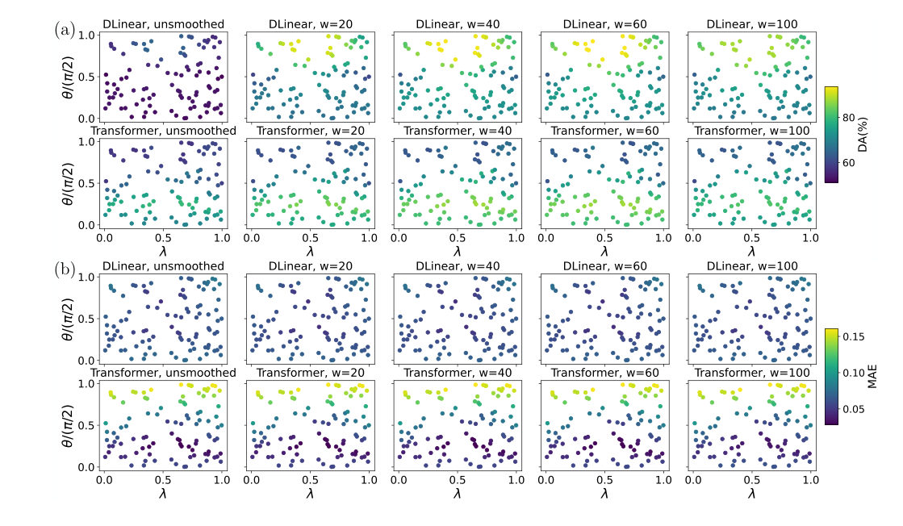
<figcaption class="paper-figure-caption"><b>Fig 2.</b> Fig. 2 Performance of DLinear and the Transformer across the initial-state parameter space (λ, θ). Panel (a) shows the directional accuracy (DA), while panel (b) shows the mean absolute error (MAE). In each panel, the upper row corresponds to DLinear and the lower row to the Transformer. The leftmost column reports the metrics computed from the raw predictions, while the remaining columns show the corresponding results after smoothing the predicted trajectories using windows w ∈{20, 40, 60, 100}. In all cases, the metrics are evaluated with respect to the ground-truth trajectories.</figcaption>
</figure>
<figure class="paper-figure-card">
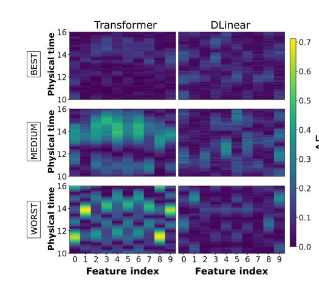
<figcaption class="paper-figure-caption"><b>Fig 3.</b> Fig. 3 Absolute error (AE) over the forecast horizon for the first ten features, corresponding to the local magnetizations. The ver- tical axis represents physical time and the horizontal axis the feature index. The left and right columns show the Transformer and DLinear predictions, respectively. The three rows correspond to rep- resentative test trajectories selected as the best, typical, and worst cases using a joint score for the two models. For each test trajectory, the MAE is first computed by averaging over the forecast horizon and all features, and the resulting values for the Transformer and DLinear are then averaged to define the joint score. The best and worst cases correspond to...</figcaption>
</figure>
<figure class="paper-figure-card">
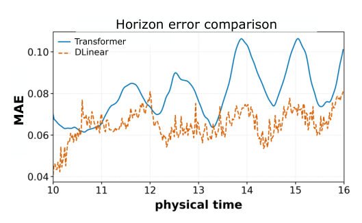
<figcaption class="paper-figure-caption"><b>Fig 4.</b> Fig. 4 Mean absolute error MAEi as a function of physical time over the forecast horizon t ∈[10, 16), obtained by averaging over all test trajectories and features at each prediction time. The solid and dashed lines correspond to the Transformer and DLinear, respec- tively.</figcaption>
</figure>
<figure class="paper-figure-card">
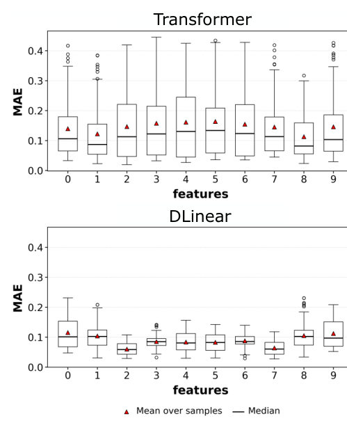
<figcaption class="paper-figure-caption"><b>Fig 5.</b> Fig. 5 Distribution of the feature-resolved mean absolute error, MAEk,f, over the test trajectories for the first ten features, corre- sponding to the local magnetizations. The upper and lower panels show the Transformer and DLinear, respectively. For each feature, the boxplot represents the distribution of MAEk,f across the test trajectories. Black lines indicate the median, while red triangles indicate the mean.</figcaption>
</figure>
</div>

<p><strong>Summary.</strong> This work tackles the difficulty of simulating chaotic quantum many-body systems by framing the problem as time-series forecasting. By comparing a nonlinear Transformer to a linear model (DLinear) on a Rydberg-atom-based PXP model, the authors show that the simple linear model maintains high accuracy across all dynamical regimes, even those exhibiting complex quantum scarring. This suggests that the underlying quantum complexity is not necessarily reflected in the complexity required for prediction.</p>
<p><strong>Why it may be interesting.</strong> It provides a concrete, data-driven test case showing that linear ML methods can capture the essential dynamics of highly complex, non-integrable quantum systems, which is highly relevant for understanding information extraction from quantum chaos.</p>
<details>
<summary>Detailed structure</summary>
<p><strong>Main problem.</strong> The paper addresses the computational challenge of simulating chaotic quantum many-body dynamics and investigates if Machine Learning can provide an effective alternative for predicting these complex time evolutions.</p>
<p><strong>Main result.</strong> Simple linear forecasting models (DLinear) can accurately predict observables generated by complex quantum dynamics across various regimes, suggesting that the complexity of the evolution does not necessitate an equally complex forecasting model.</p>
<p><strong>Method.</strong> The authors formulate quantum dynamics as a time-series forecasting problem, comparing the performance of a nonlinear Transformer against a simple linear model (DLinear) on simulated quantum trajectories.</p>
<p><strong>Model / system.</strong> The study uses the paradigmatic PXP model, simulating dynamics on a few-qubit chain realizable with Rydberg-atom arrays. The system is tested across dynamical regimes ranging from ergodic behavior to non-ergodic quantum many-body scarring.</p>
<p><strong>Key observables.</strong> Local magnetizations and connected two-point correlation functions are used as the feature vectors for time-series forecasting.</p>
<p><strong>Important parameters / regimes.</strong> The initial state choice controls the dynamical regime, parameterized between fully polarized and Néel states. The analysis compares performance across these controlled initial conditions.</p>
<p><strong>Assumptions / limitations.</strong> The framework is benchmarked on a few-qubit PXP chain where exact time evolution is computable, but the methodology is claimed to be extendable to other systems with available time-series data.</p>
<p><strong>Figures summary.</strong> Figures schematically illustrate the data preparation, training, and prediction stages for both the Transformer and DLinear models across different initial states.</p>
<p><strong>Paper structure.</strong> The paper establishes the problem by noting the difficulty of simulating chaotic dynamics, details the ML forecasting protocol using the PXP model, compares the Transformer and DLinear architectures across varying initial states, and concludes by demonstrating the superior performance of the linear model.</p>
</details>
<details>
<summary>Abstract</summary>
<p>Accurately simulating chaotic quantum many-body dynamics remains a major computational challenge for classical methods, due to the rapid buildup and spatial spreading of entanglement during the evolution. This raises the question of whether machine learning can provide an effective alternative for predicting quantum dynamics. We address this question by formulating quantum dynamics as a time-series forecasting problem, using a few-qubit PXP chain, realizable with Rydberg-atom arrays, as a benchmark. By varying the initial state, the system spans dynamical regimes ranging from ergodic behavior to quantum many-body scarring, providing a controlled setting for testing forecasting models across qualitatively different dynamics. We compare two contrasting architectures: an expressive nonlinear Transformer and DLinear, a simple linear forecasting model. The Transformer accurately predicts dynamics in the more ergodic regime, but its performance progressively deteriorates as the initial state approaches the scarred limit. In contrast, DLinear remains accurate across the entire family of initial states, with its main deviations consisting of small high-frequency oscillations that have little effect on the overall prediction error. Remarkably, these results show that observables generated by complex quantum many-body dynamics can be forecast with high accuracy through a simple linear mapping from past to future observations. This reveals that the complexity of the underlying quantum evolution need not translate into an equally complex forecasting problem.</p>
</details>
<p><sub><a href="#top">↑ back to top</a></sub></p>

<p><a id="paper-2610.12070"></a></p>
<h3 id="a-deterministic-polynomial-chaos-galerkin-method-for-non-markovian-quantum-state-diffusion"><a href="http://arxiv.org/abs/2610.12070v1">A deterministic polynomial chaos Galerkin method for non-Markovian quantum state diffusion</a></h3>
<p><strong>Authors:</strong> Quanhui Zhu, Zhenning Cai<br>
<strong>Type:</strong> theory · <strong>Category:</strong> numerical methods · <strong>PDF:</strong> <a href="https://arxiv.org/pdf/2610.12070v1">https://arxiv.org/pdf/2610.12070v1</a><br>
<strong>Analysis basis:</strong> full PDF text, analyzed in chunks
<strong>Topic relevance:</strong> 🔥 <code>methods for driven-dissipative</code> <strong>4/5</strong> · <code>correlated / nonlocal dissipation</code> <strong>3/5</strong> · <code>Keldysh / 2PI / non-Gaussian methods</code> <strong>2/5</strong> · <code>driven-dissipative phase transition</code> <strong>2/5</strong> · <code>quantum measurements</code> <strong>2/5</strong></p>
<div class="figure-strip-hint">↔ Scroll figures horizontally</div>
<div class="paper-figures-scroll">
<figure class="paper-figure-card">
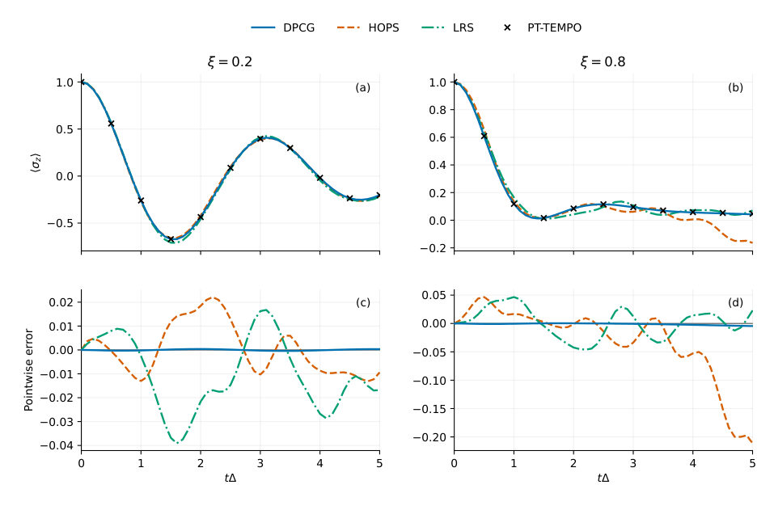
<figcaption class="paper-figure-caption"><b>Fig 1.</b> FIG. 1. Example IV.1. Spin polarization (top) and pointwise error relative to PT-TEMPO (bottom)</figcaption>
</figure>
<figure class="paper-figure-card">

<figcaption class="paper-figure-caption"><b>Fig 2.</b> FIG. 2. Example IV.2. Single-packet harmonic dynamics at ε = 1/32 and ξ = 1. Blue solid: DPCG.</figcaption>
</figure>
<figure class="paper-figure-card">
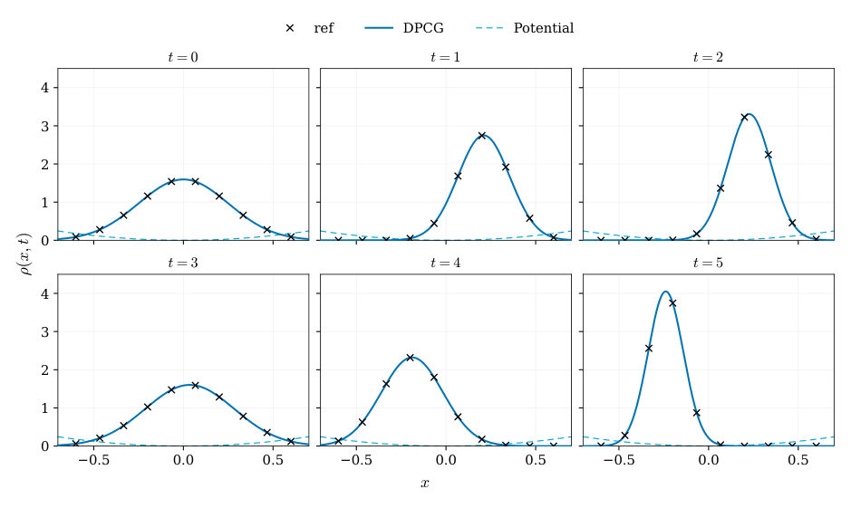
<figcaption class="paper-figure-caption"><b>Fig 3.</b> Figure 3 shows how the density at T = 5 changes with ε for the fixed two-packet initial</figcaption>
</figure>
<figure class="paper-figure-card">
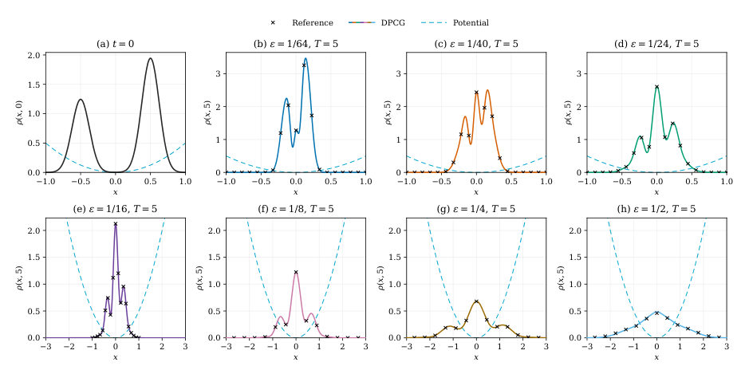
<figcaption class="paper-figure-caption"><b>Fig 4.</b> FIG. 3. Example IV.2. Density evolution with ξ = 1 from the fixed initial state in (a). (b)–(h)</figcaption>
</figure>
<figure class="paper-figure-card">
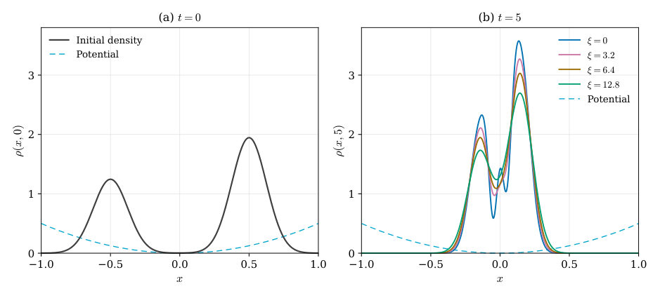
<figcaption class="paper-figure-caption"><b>Fig 5.</b> FIG. 4. Example IV.2. Density evolution at ε = 1/64 from the fixed initial state in (a). (b)</figcaption>
</figure>
</div>

<p><strong>Summary.</strong> This paper introduces a deterministic polynomial chaos Galerkin method (DPCG) to solve the challenging non-Markovian quantum state diffusion problem. By replacing ensemble averaging with a single deterministic solve based on low-rank decomposition and polynomial expansion, the method drastically cuts computational costs. It proves to be highly accurate and efficient for simulating open quantum systems like the spin-boson model.</p>
<p><strong>Why it may be interesting.</strong> This work provides a powerful, deterministic alternative to computationally expensive stochastic methods for simulating open quantum dynamics, making complex, memory-dependent quantum processes accessible for routine simulation.</p>
<details>
<summary>Detailed structure</summary>
<p><strong>Main problem.</strong> Developing general-purpose and computationally efficient numerical methods for simulating non-Markovian quantum state diffusion (NMQSD) in open quantum systems.</p>
<p><strong>Main result.</strong> The proposed deterministic polynomial chaos Galerkin method (DPCG) achieves accuracy comparable to stochastic hierarchy methods while drastically reducing computational cost by eliminating the need for large ensembles of trajectories.</p>
<p><strong>Method.</strong> The method combines a low-rank decomposition of bath correlations with a Galerkin projection onto a polynomial chaos basis, transforming the stochastic evolution into a single, deterministic set of partial differential equations for the expansion coefficients.</p>
<p><strong>Model / system.</strong> The study focuses on open quantum systems whose dynamics are governed by the NMQSD equation, exemplified by the spin-boson model and the Caldeira-Leggett model. The system interacts with an environment modeled by bath correlations.</p>
<p><strong>Key observables.</strong> The reduced density matrix ($
ho(t)$), spin polarization ($\langle\sigma_z
angle_t$), and the state error ($|\psi_t - \psi_{Q,P,t}|_X$).</p>
<p><strong>Important parameters / regimes.</strong> Low-rank truncation order ($Q$), polynomial chaos total degree ($P$), and the coupling strength ($\xi$ or $\varepsilon$).</p>
<p><strong>Assumptions / limitations.</strong> The primary approximations involve truncating the infinite-dimensional bath correlation function via low-rank decomposition and truncating the polynomial chaos expansion at a finite total degree $P$.</p>
<p><strong>Figures summary.</strong> Benchmark comparisons (e.g., for the spin-boson model) show the DPCG method maintaining accuracy comparable to reference solutions at strong coupling, while computational cost is significantly lower than stochastic methods.</p>
<p><strong>Paper structure.</strong> The paper first introduces the challenge of NMQSD and compares it to existing stochastic methods (HOPS/LRS). It then details the DPCG formulation, deriving the deterministic coefficient system via low-rank factorization and Galerkin projection. Finally, it presents convergence analysis and benchmarks on physical models.</p>
</details>
<details>
<summary>Abstract</summary>
<p>Developing general-purpose numerical methods for non-Markovian quantum state diffusion has long been a challenge in the simulation of open quantum systems. This paper proposes a deterministic polynomial chaos Galerkin method, which is easy to implement, accurate, and efficient. By combining a low-rank decomposition of bath correlations with Galerkin projection onto a polynomial chaos basis, the method yields a deterministic formulation compatible with standard numerical solvers for partial differential equations. The reduced density matrix is obtained from a single deterministic solve at a cost comparable to that of computing one stochastic hierarchy trajectory. Replacing an ensemble of $N_{\mathrm{traj}}$ trajectories therefore reduces the computational cost by approximately a factor of $N_{\mathrm{traj}}$ and eliminates statistical sampling error. Benchmark comparisons show that the proposed method achieves smaller errors at lower computational cost than the tested stochastic hierarchy methods. Applications involving nonquadratic potentials, diffraction and interference, and coupled three-dimensional dynamics demonstrate its ability to handle challenging problems.</p>
</details>
<p><sub><a href="#top">↑ back to top</a></sub></p>

<p><a id="paper-2610.11897"></a></p>
<h3 id="emergent-ssh-physics-and-localization-in-a-cavity-atom-system-beyond-the-rotating-wave-approximation"><a href="http://arxiv.org/abs/2610.11897v1">Emergent SSH physics and localization in a cavity--atom system beyond the rotating-wave approximation</a></h3>
<p><strong>Authors:</strong> H. Shen, J. Cao, R. Wang, X. Z. Zhang<br>
<strong>Type:</strong> theory · <strong>Category:</strong> other · <strong>PDF:</strong> <a href="https://arxiv.org/pdf/2610.11897v1">https://arxiv.org/pdf/2610.11897v1</a><br>
<strong>Analysis basis:</strong> full PDF text, analyzed in chunks
<strong>Topic relevance:</strong> 🔥 <code>analog quantum simulation</code> <strong>4/5</strong> · <code>Tavis-Cummings &amp; cavity-many-emitter</code> <strong>3/5</strong> · <code>driven-dissipative phase transition</code> <strong>2/5</strong> · <code>Frenkel-Kontorova</code> <strong>1/5</strong> · <code>Keldysh / 2PI / non-Gaussian methods</code> <strong>1/5</strong> · <code>methods for driven-dissipative</code> <strong>1/5</strong> · <code>non-equilibrium universality</code> <strong>1/5</strong></p>
<div class="figure-strip-hint">↔ Scroll figures horizontally</div>
<div class="paper-figures-scroll">
<figure class="paper-figure-card">
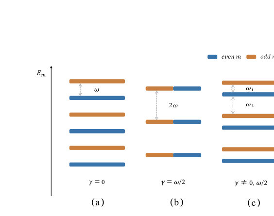
<figcaption class="paper-figure-caption"><b>Fig 1.</b> FIG. 1. Schematic illustration of the eigenenergy structure Em given by Eq. (17). Blue (yellow) solid lines denote energy levels with even (odd) index m. (a) γ = 0: all eigenener- gies form a single Wannier–Stark ladder with a uniform level spacing ω, indicating a fully degenerate two-sublattice struc- ture. (b) γ = ω/2: the spectra become pairwise degener- ate, and the energy levels reorganize into an effective single ladder with doubled spacing 2ω. (c) γ ̸= 0 and ω/2: the degeneracy is lifted and the spectra split into two interlaced Wannier–Stark ladders with distinct spacings ω1 and ω2, sat- isfying ω1+ω2 = 2ω. The three typical spectral configurations underlie the emergence of...</figcaption>
</figure>
<figure class="paper-figure-card">
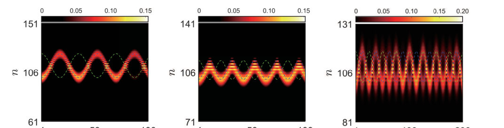
<figcaption class="paper-figure-caption"><b>Fig 2.</b> FIG. 2. Time-evolution probability distribution in the coordinate space for three typical values of the effective coupling γ. The blue and green dashed lines indicate the trajectories of the effective wave-packet centers na(t) and nb(t), respectively. (a) γ = 0: the dynamics exhibits conventional Bloch oscillations with period TB = 2π/ω; (b) γ = ω/2: the frequency-doubled Bloch oscillations with period T (2) B = TB/2 = π/ω. (c) γ = ω/50, the coexistence of two inequivalent energy ladders induces Bloch–Zener oscillations characterized with period TBZ = 2π/|E1 −E2|. The initial state is chosen as a Gaussian wave packet,</figcaption>
</figure>
<figure class="paper-figure-card">
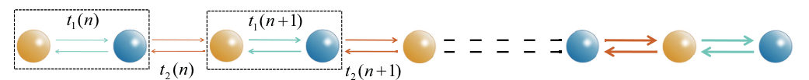
<figcaption class="paper-figure-caption"><b>Fig 3.</b> FIG. 3. Schematic of the effective lattice generated by Heff,2 in the small-photon-number regime. Each unit cell (black dashed box) consists of two sublattice sites coupled by the intracell hopping t1(n) = λ1 √¯n + 2n −1, while adjacent cells are connected by the intercell hopping t2(n) = λ2 √¯n + 2n. Both couplings inherit the SSH-type dimerization ( t1 ̸= t2) and grow monotonically with the cell index n, as indicated by the increasing arrow thicknessretain the SSH-type dimerization and increase monotonically with the cell index n, as indicated by the increasing arrow thickness The resulting excitation-number lattice is therefore a position-dependent SSH chain rather than a uniform dimerized...</figcaption>
</figure>
<figure class="paper-figure-card">
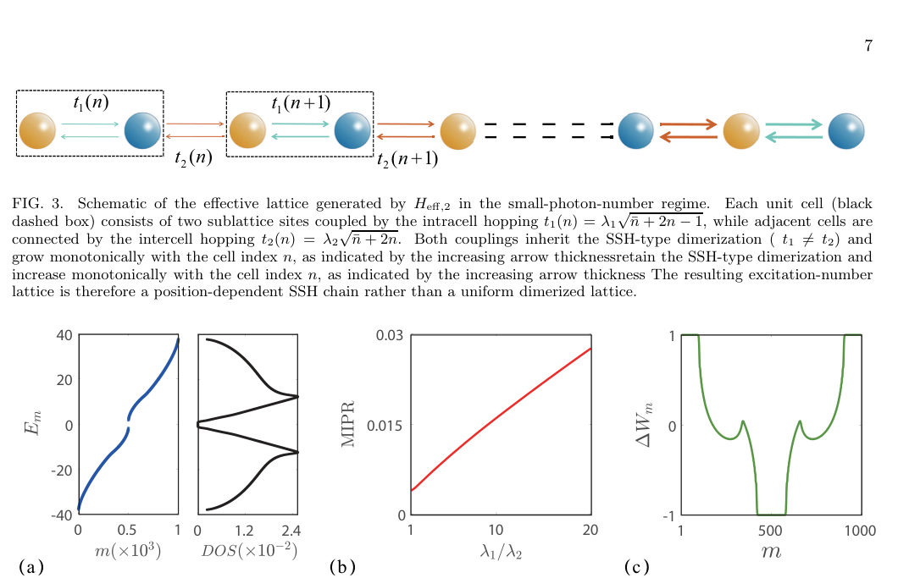
<figcaption class="paper-figure-caption"><b>Fig 4.</b> FIG. 4. Spectral structure and eigenstate diagnostics of the hopping-deformed SSH model. (a) Eigenenergies structure Em (blue curve) and density of state DOS (black curve) for representative parameters. (b) Mean inverse participation ratio (MIPR) versus dimerization ratio λ1/λ2: the monotonic increase signals progressive localization as intra-cell hopping becomes dominant over inter-cell coupling. (c) Right-left weight imbalance ∆Wm revealing an energy-dependent bias toward the strong-hopping side. Parameters: N = 500, ¯n = 10, λ2 = 0.4 [panel (b)] and λ1 = 2λ2 = 0.8 [panels (a),(c)]. Both the cavity frequency ω and the atomic transition frequency Ωare set to zero.</figcaption>
</figure>
<figure class="paper-figure-card">
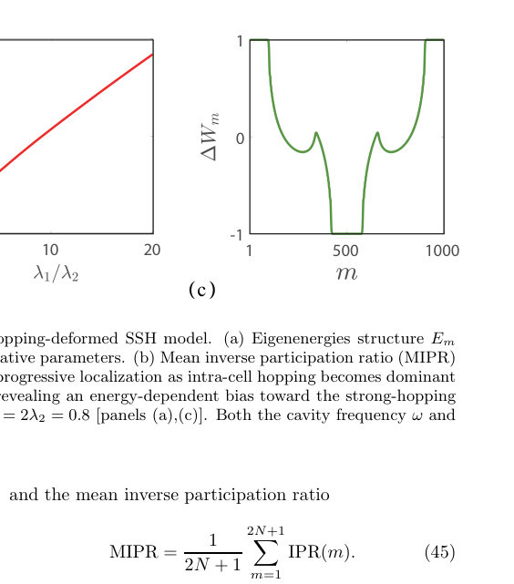
<figcaption class="paper-figure-caption"><b>Fig 5.</b> Figure 4(b) shows that MIPR increases from near zero in the uniform limit to a finite value once hopping defor- mation is present. This indicates that localization is en- hanced for a broad portion of the spectrum, rather than being a feature of isolated states. A finite MIPR indi- cates that a substantial fraction of the spectrum consists of non-extended states, in agreement with the turning- point interpretation. To reveal the spatial bias of the eigenstates, we further evaluate the right-left weight imbalance</figcaption>
</figure>
</div>

<p><strong>Summary.</strong> This paper analyzes a cavity-atom system by mapping its dynamics onto an effective 1D lattice model. It shows that the system exhibits two distinct regimes: a large-photon-number regime yielding SSH-type physics with controllable Bloch oscillations, and a small-photon-number regime inducing strong hopping deformation and localization. This highlights the tunability of quantum transport in cavity QED platforms.</p>
<p><strong>Why it may be interesting.</strong> This work provides a detailed theoretical framework for engineering synthetic quantum transport landscapes using cavity QED, demonstrating how non-RWA terms lead to rich physics like SSH models and localization.</p>
<details>
<summary>Detailed structure</summary>
<p><strong>Main problem.</strong> The paper investigates emergent SSH physics and localization in a cavity-atom system by analyzing its dynamics beyond the rotating-wave approximation.</p>
<p><strong>Main result.</strong> The system can realize both emergent ladder spectra (in the large-photon-number regime) and hopping-induced localization (in the small-photon-number regime) using the same physical platform.</p>
<p><strong>Method.</strong> The dynamics are recast into an effective tight-binding problem in the excitation-number basis, analyzed using perturbation theory and by examining different parameter regimes.</p>
<p><strong>Model / system.</strong> The physical system is a superconducting microwave resonator coupled to an effective two-level artificial atom (Cavity-QED platform). The dynamics are modeled by a generalized quantum Rabi Hamiltonian projected onto effective 1D lattice Hamiltonians.</p>
<p><strong>Key observables.</strong> Bloch and Bloch-Zener oscillations, anomalous diffusion, density of states reshaping, and return probability $R(t)$.</p>
<p><strong>Important parameters / regimes.</strong> Photon number ($ar{n}$), Stark frequency ($\omega$), and coupling strengths ($\lambda_1, \lambda_2, \Omega$).</p>
<p><strong>Assumptions / limitations.</strong> The analysis involves projecting the dynamics onto invariant subspaces ($\mathbb{Z}_2$ parity) and analyzing distinct limits, such as the large-photon-number limit ($ar{n} \gg 2N$).</p>
<p><strong>Figures summary.</strong> Figures illustrate the energy structure for different oscillation regimes ($\gamma=0, \gamma=\omega/2, \gamma
eq 0, \omega/2$) and compare the time evolution of probability distributions $P_n(t)$ across small, intermediate, and large Stark frequency regimes.</p>
<p><strong>Paper structure.</strong> The paper progresses from deriving the effective Hamiltonian by projecting the full Rabi model, analyzing the large-$ar{n}$ limit to show SSH-type behavior and Bloch oscillations, and finally examining the small-$ar{n}$ limit to reveal hopping-induced localization and anomalous diffusion.</p>
</details>
<details>
<summary>Abstract</summary>
<p>We investigate a cavity--atom system beyond the rotating-wave approximation and recast its dynamics as an effective tight-binding problem in the excitation-number basis. The same experimentally relevant light--matter platform exhibits two distinct regimes controlled by the photon number. In the large-photon-number regime, the hopping amplitudes become nearly uniform and the effective lattice reduces to a dimerized SSH-type chain subject to a linear energy gradient. The spectrum then organizes into one or two Wannier--Stark ladders, giving rise to controllable Bloch and Bloch--Zener oscillations and quantitatively explaining the observed revival patterns. In the small-photon-number regime, the intrinsic $\sqrt{\bar n+(\cdots)}$ dependence produces a pronounced hopping deformation, namely dimerized couplings that increase along the excitation-number lattice. This deformation reshapes the density of states, enhances collective localization, and generates an energy-resolved spatial bias of the eigenstates. The corresponding real-time dynamics displays direction-dependent anomalous diffusion together with Bloch-like revivals and beat phenomena in selected parameter windows. Our results show that the same cavity--atom platform can realize both emergent ladder spectra and hopping-induced localization in excitation-number space.</p>
</details>
<p><sub><a href="#top">↑ back to top</a></sub></p>

<p><a id="paper-2610.11234"></a></p>
<h3 id="exact-polariton-condensate-states-via-nonlinear-stark-coupling"><a href="http://arxiv.org/abs/2610.11234v1">Exact polariton-condensate states via nonlinear Stark coupling</a></h3>
<p><strong>Authors:</strong> DaKai He abd Zhi Song<br>
<strong>Type:</strong> theory · <strong>Category:</strong> other · <strong>PDF:</strong> <a href="https://arxiv.org/pdf/2610.11234v1">https://arxiv.org/pdf/2610.11234v1</a><br>
<strong>Analysis basis:</strong> full PDF text, analyzed in chunks
<strong>Topic relevance:</strong> 🔥 <code>scars &amp; prethermalization</code> <strong>4/5</strong> · <code>Tavis-Cummings &amp; cavity-many-emitter</code> <strong>3/5</strong> · <code>analog quantum simulation</code> <strong>3/5</strong> · <code>driven-dissipative phase transition</code> <strong>2/5</strong> · <code>non-equilibrium universality</code> <strong>1/5</strong></p>
<div class="figure-strip-hint">↔ Scroll figures horizontally</div>
<div class="paper-figures-scroll">
<figure class="paper-figure-card">
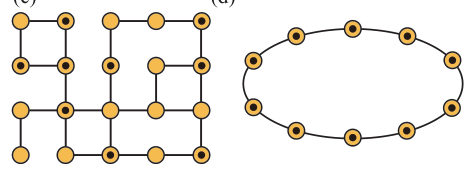
<figcaption class="paper-figure-caption"><b>Fig 1.</b> FIG. 1. Construction of the hybrid system Hamiltonian via the building-block method. (a) The three fundamental dimer units used for Hamiltonian construction: the AA dimer, AC dimer, and CC dimer, as defined in Eq. (2). (b) Illus- trative examples of Hamiltonian composition through dimer overlapping. The connection between identical or distinct dimers is realized by merging the sites enclosed in the dashed boxes. Consistency requires that the overlapping sites be of the same species (either both atom-doped or both empty). (c) Schematic representation of an arbitrary lattice system formed by a sequence of arbitrary dimers. (d) Schematic representation of a one-dimensional periodic chain...</figcaption>
</figure>
<figure class="paper-figure-card">
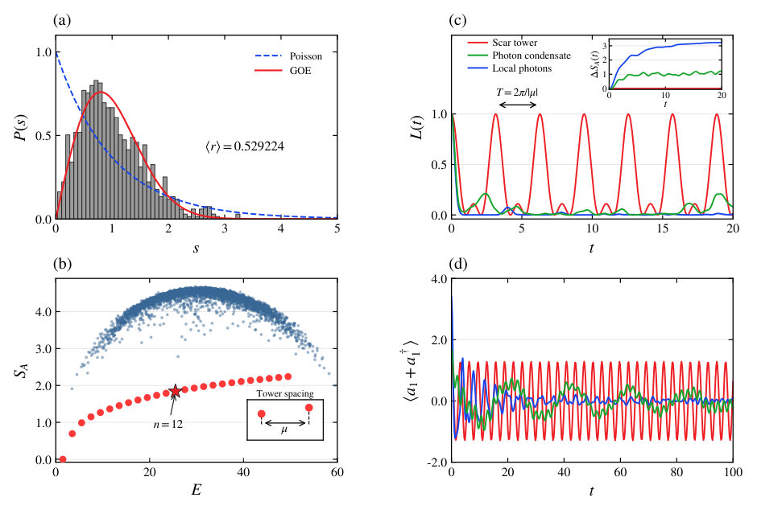
<figcaption class="paper-figure-caption"><b>Fig 2.</b> FIG. 2. Spectral statistics and dynamics of the exact scar tower. (a) Level-spacing distribution P(s) in the middle of the spectrum in the even-reflection-parity sector with N = 12, compared with GOE (red solid) and Poisson (blue dashed) predictions; ⟨r⟩= 0.529224. (b) Bipartite entanglement entropy SA versus energy E. Blue points represent eigenstates in the N = 12 sector, while red circles show the exact-state tower for n = 0, . . . , 24; the star identifies its n = 12 member. Inset: adjacent tower states separated by µ. (c) Loschmidt echo L(t), with scar revival period T = 2π/µ = π. Inset: entanglement- entropy change ∆SA(t) = SA(t) −SA(0). (d) Local field quadrature ⟨a1 + a† 1⟩. In (c),...</figcaption>
</figure>
<figure class="paper-figure-card">
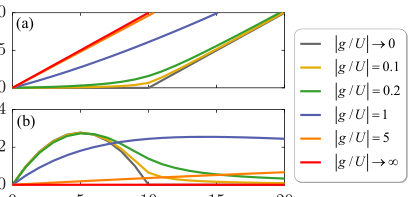
<figcaption class="paper-figure-caption"><b>Fig 3.</b> FIG. 3. Photon and atomic correlations of the exact ground state |ψn G⟩for N = 10 at U = UR. Panels (a) and (b) show Ar and Sr, respectively, as functions of the total excitation number n. Different colors denote different values of |g/U|. Both correlators are independent of the separation between distinct sites.</figcaption>
</figure>
<figure class="paper-figure-card">
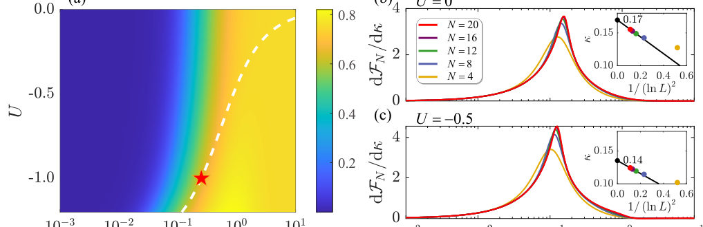
<figcaption class="paper-figure-caption"><b>Fig 4.</b> FIG. 4. Ground-state excitation-number fluctuations and finite-size estimates of the MI–SF transition for Hring at unit filling, N = N. (a) Site-averaged variance FN, defined in Eq. (9), in the κ–U plane for N = 4. The white dashed curve denotes the resonance condition U = UR. The red star at (κ, U) = (1/4, −1) marks the point where the exact ground-state energies are degenerate across excitation sectors. (b),(c) Derivatives ∂FN/∂κ obtained using DMRG for U = 0 and U = −0.5, respectively, with N = 4, 8, 12, 16, and 20. The insets show the peak positions versus 1/(ln L)2, with L = N. Linear fits to the three largest sizes yield fluctuation-based transition estimates of κest ≃0.17 and 0.14,...</figcaption>
</figure>
</div>

<p><strong>Summary.</strong> The authors develop a method using building-block construction to find exact many-body eigenstates in coupled cavity-atom systems. They demonstrate that these states exhibit a dual nature: they can manifest as quantum scars that violate thermalization, or they can form robust polariton condensates characterized by long-range order. This framework is valuable for engineering quantum phases in light-matter devices.</p>
<p><strong>Why it may be interesting.</strong> This work provides a versatile theoretical framework for engineering coherent quantum phases (condensates) and non-thermalizing states (scars) in controllable light-matter architectures, which is central to quantum simulation and quantum optics.</p>
<details>
<summary>Detailed structure</summary>
<p><strong>Main problem.</strong> To identify and characterize exact many-body eigenstates in hybrid light-matter systems, demonstrating their dual physical nature as quantum scars or polariton condensates.</p>
<p><strong>Main result.</strong> The constructed exact states exhibit a dual nature: they act as quantum scars violating ETH when embedded in a chaotic spectrum, and they form polariton condensates with Off-Diagonal Long-Range Order (ODLRO) when they are ground states in fixed-excitation sectors.</p>
<p><strong>Method.</strong> The study employs a building-block construction method based on imposing specific resonance conditions on the system's Hamiltonian to analytically find exact eigenstates.</p>
<p><strong>Model / system.</strong> The system is a hybrid of coupled cavities (light) and two-level atoms (matter), modeled by a lattice Hamiltonian incorporating JC coupling and nonlinear Stark interactions.</p>
<p><strong>Key observables.</strong> Quantum scars (violation of ETH), Off-Diagonal Long-Range Order (ODLRO) via correlation functions ($A_r, S_r$), and local excitation-number fluctuations for MI-SF transitions.</p>
<p><strong>Important parameters / regimes.</strong> Resonance conditions ($g_l = \pm rac{\Omega_l}{2}(\omega_l - \kappa)$, etc.), coupling strengths ($g, U_R$), and fixed total excitation number ($\mu$).</p>
<p><strong>Assumptions / limitations.</strong> The construction relies on imposing specific resonance conditions on the building blocks, and the analysis of ODLRO assumes fixed, non-zero filling ($
ho &gt; 0$).</p>
<p><strong>Figures summary.</strong> Figures illustrate the building-block construction, spectral statistics (comparing to GOE/Poisson), bipartite entanglement entropy, and Loschmidt echo dynamics for the identified scar tower.</p>
<p><strong>Paper structure.</strong> The paper first introduces the building-block construction and resonance conditions to find exact states. It then analyzes the dual nature of these states by examining spectral properties (scars) and coherence (condensates). Finally, it rigorously proves ODLRO and characterizes the MI-SF transition using correlation functions.</p>
</details>
<details>
<summary>Abstract</summary>
<p>We study a hybrid system of coupled cavities, with or without two-level atoms doped inside. By employing a building-block construction facilitated by nonlinear Stark coupling, we identify a manifold of exact many-body eigenstates that remain analytically tractable across arbitrary lattice geometries and atom distributions. We demonstrate that these exact states exhibit a dual physical nature depending on their spectral positioning: when embedded within the chaotic many-body spectrum, they manifest as quantum scars that violate the eigenstate thermalization hypothesis and undergo weak ergodicity breaking; conversely, as ground states within fixed-total-excitation sectors, they exhibit off-diagonal long-range order and form polariton condensates. Furthermore, numerical calculations of local excitation-number fluctuations suggest that negative Stark coupling shifts the Mott-insulator to superfluid transition toward weaker inter-cavity hopping. Our findings provide a versatile framework for engineering both coherent quantum phases and non-thermalizing states in diverse light-matter architectures.</p>
</details>
<p><sub><a href="#top">↑ back to top</a></sub></p>

<p><a id="paper-2610.10714"></a></p>
<h3 id="quantum-jumps-of-sound"><a href="http://arxiv.org/abs/2610.10714v1">Quantum jumps of sound</a></h3>
<p><strong>Authors:</strong> Takuma Makihara, Erik Szakiel, Matthew P. Maksymowych, Oliver A. Hitchcock, Kaveh Pezeshki, Rachel G. Gruenke-Freudenstein, Mihir Pendharkar, Shannon P. Harvey, David I. Schuster, Amir H. Safavi-Naeini<br>
<strong>Type:</strong> experiment · <strong>Category:</strong> other · <strong>PDF:</strong> <a href="https://arxiv.org/pdf/2610.10714v1">https://arxiv.org/pdf/2610.10714v1</a><br>
<strong>Analysis basis:</strong> full PDF text, analyzed in chunks
<strong>Topic relevance:</strong> 🔥 <code>quantum measurements</code> <strong>4/5</strong> · <code>QC/QI experiment</code> <strong>3/5</strong> · <code>quantum optics experiment</code> <strong>2/5</strong> · <code>Full counting statistics</code> <strong>1/5</strong> · <code>correlated / nonlocal dissipation</code> <strong>1/5</strong> · <code>driven-dissipative phase transition</code> <strong>1/5</strong> · <code>methods for driven-dissipative</code> <strong>1/5</strong></p>
<div class="figure-strip-hint">↔ Scroll figures horizontally</div>
<div class="paper-figures-scroll">
<figure class="paper-figure-card">
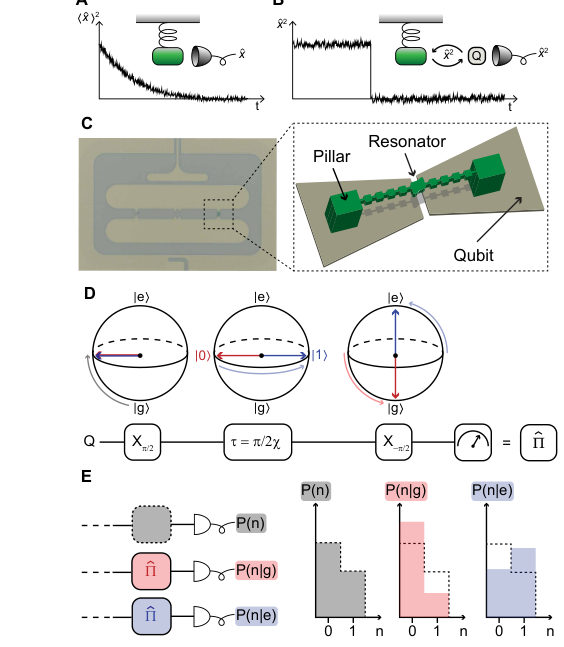
<figcaption class="paper-figure-caption"><b>Fig 1.</b> FIG. 1. Device architecture. (A) The quantization of sound is hidden from an observer measuring the position ˆx(t) of a mechanical resonator. If an observer measures ⟨ˆx(t)⟩and calculates the energy of the resonator as ⟨ˆx(t)⟩2, a continu- ous exponential decay results. (B) If an observer can directly measure ˆx2(t) of a mechanical resonator, then quantum jumps in the mechanical energy can be observed. By using a qubit and mechanical resonator coupled in the dispersive regime, one can directly measure ˆx2(t). (C) Optical micrograph of the device measured in this work, consisting of a transmon qubit coupled to a LN mechanical resonator. (Inset) Illustra- tion of the qubit-mechanics...</figcaption>
</figure>
<figure class="paper-figure-card">
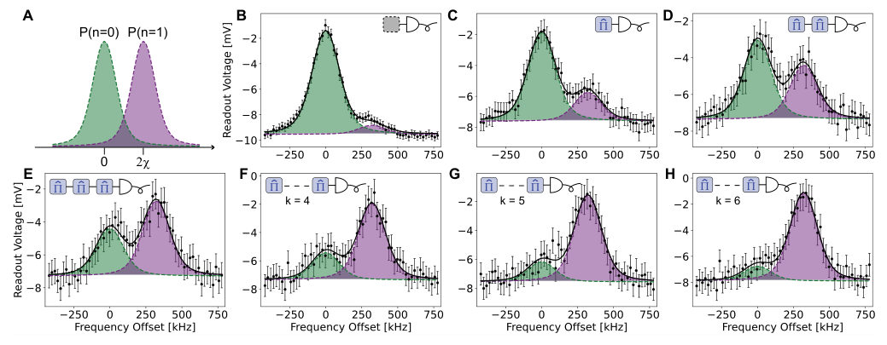
<figcaption class="paper-figure-caption"><b>Fig 2.</b> FIG. 2. Postselected qubit spectra. (A) Illustration of the qubit excitation spectrum in the strong dispersive regime. The area under the peak centered at zero frequency offset (2χ frequency offset) is proportional to the probability of measuring n = 0 (n = 1) phonons in the mechanical resonator. (B) Qubit spectrum measured with no parity checks, representing the initial coherent state of the mechanics. (C to H) Qubit spectrum postselected on k = 1, 2, 3, 4, 5, 6 consecutive QND parity measurements, where every measurement outcome is |e⟩. As we observe more consecutive measurements of the qubit in the excited state, we become more certain that our mechanical resonator is in the n = 1 state,...</figcaption>
</figure>
<figure class="paper-figure-card">
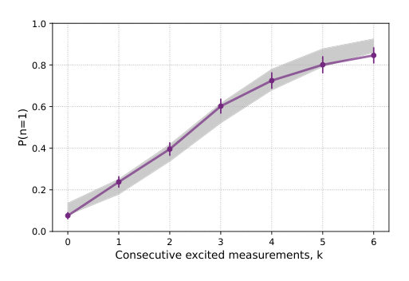
<figcaption class="paper-figure-caption"><b>Fig 3.</b> FIG. 3. Evolution of P(n=1) with postselection. The purple circles illustrate P(n = 1) from the postselected qubit spectra in Fig. 2. Consecutive measurement outcomes of |e⟩ increase P(n=1) through projection of the mechanical state, reflecting the information we learn after each measurement outcome. The gray shaded region illustrates a fit obtained through forward-propagating P(n) using Bayesian inference, where we fit P(e|even) and α of the initial coherent state. The error bars and shaded region represent 95% confidence intervals of the data and fit respectively.</figcaption>
</figure>
<figure class="paper-figure-card">
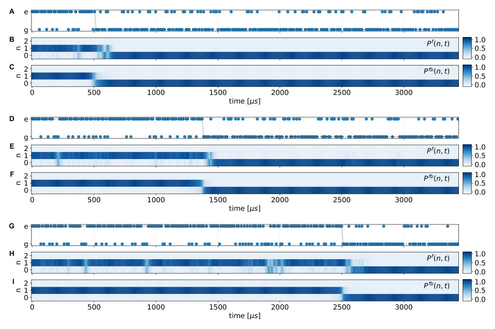
<figcaption class="paper-figure-caption"><b>Fig 4.</b> FIG. 4. Quantum jumps of a mechanical resonator. Three individual measurement trajectories (rows), each consisting of 294 consecutive QND parity measurements on a mechanical resonator heralded in a single-phonon state with P(n = 1) = 0.85. (A, D, and G) Raw qubit measurement outcomes q ∈{g, e} after each Ramsey sequence. The dotted lines show the most- probable phonon number at each time step from forward-backward estimation. In each trajectory, an abrupt transition from predominantly |e⟩to predominantly |g⟩marks a quantum jump from n = 1 to n = 0. (B, E, and H) Forward-propagated phonon number distribution P f(n, t), using only measurements up to time t. (C, F, and I) Forward-backward...</figcaption>
</figure>
</div>

<p><strong>Summary.</strong> This experiment demonstrates the direct measurement of quantized mechanical energy in a nanomechanical resonator coupled to a superconducting qubit. By performing repeated quantum nondemolition measurements, the researchers observed clear quantum jumps between the ground and first excited states. This work marks a significant step in applying quantum control techniques to macroscopic mechanical systems.</p>
<p><strong>Why it may be interesting.</strong> This work provides a direct, high-fidelity demonstration of quantum measurement backaction on a macroscopic mechanical oscillator, extending quantum control concepts from superconducting circuits and trapped ions to mechanical systems.</p>
<details>
<summary>Detailed structure</summary>
<p><strong>Main problem.</strong> The goal was to observe the quantized nature of mechanical energy (phonon number discreteness) in a massive, vibrating object, which is otherwise hidden when measuring displacement.</p>
<p><strong>Main result.</strong> The authors successfully observed quantum jumps between the resonator's first excited state and ground state, and heralded a single-phonon state with 85% fidelity.</p>
<p><strong>Method.</strong> They used repeated quantum nondemolition (QND) measurements of the phonon number, implemented by coupling a superconducting qubit to a nanomechanical resonator.</p>
<p><strong>Model / system.</strong> The system involves a nanomechanical resonator (e.g., in lithium niobate) dispersively coupled to a superconducting transmon qubit. The dynamics are governed by an effective Hamiltonian allowing QND measurement of the phonon number ($\hat{n}$).</p>
<p><strong>Key observables.</strong> Phonon number distribution $P(n)$, quantum jumps between $|n=1
angle$ and $|n=0
angle$, and the mechanical lifetime ($T_1$).</p>
<p><strong>Important parameters / regimes.</strong> Mechanical lifetime ($T_1 \approx 2.1$ ms or $645 \mu$s), dispersive shift ($2\chi/2\pi = 328$ kHz/phonon), and single-shot parity assignment fidelity (0.68 to 0.912).</p>
<p><strong>Assumptions / limitations.</strong> The measurement process is significantly faster than the phonon lifetime, and the forward-backward algorithm is used to estimate the true state evolution from noisy measurement records.</p>
<p><strong>Figures summary.</strong> Figures illustrate the device architecture, postselected qubit spectra showing phonon number peaks, and individual measurement trajectories demonstrating abrupt quantum jumps between energy levels.</p>
<p><strong>Paper structure.</strong> The paper establishes the theoretical need to measure energy directly, details the superconducting qubit/nanomechanical resonator platform, presents the QND measurement protocol using parity checks, and finally reports the observation of quantum jumps and state preparation fidelity.</p>
</details>
<details>
<summary>Abstract</summary>
<p>Quantum mechanics predicts that a vibrating object's energy comes in discrete packets, yet no measurement of its position reveals this discreteness. Resolving individual energy levels requires a qualitatively different measurement, one coupling to the resonator's energy rather than its displacement. We use a superconducting qubit dispersively coupled to a nanomechanical resonator to perform repeated quantum nondemolition measurements of the phonon number. An aligned transfer-print technique integrating the qubit and resonator yields a mechanical lifetime of $T_1 = 2.1$ milliseconds and a dispersive shift of $2χ/2π= 328$ kilohertz per phonon. We heralded single-phonon states with 85% fidelity and observed quantum jumps between the resonator's first excited state and ground state. These discontinuous transitions are a striking manifestation of quantum mechanics in a massive, vibrating object.</p>
</details>
<p><sub><a href="#top">↑ back to top</a></sub></p>

<p><a id="paper-2610.10705"></a></p>
<h3 id="quantum-networking-at-the-speed-of-quantum-computation-kilohertz-entanglement-in-a-heterogeneous-quantum-system"><a href="http://arxiv.org/abs/2610.10705v1">Quantum Networking at the Speed of Quantum Computation: Kilohertz Entanglement in a Heterogeneous Quantum System</a></h3>
<p><strong>Authors:</strong> Lukas Hartung, Pierre Barral, Noah Glachman, George Toh, Jacob H. Davidson, Sagnik Saha, Alexander Chuang, Matthew C. Cambria, Madison Sutula, Alexander Abulnaga, Julia Breevord, John Chiaverini, Ian Counts, Aos Dabbagh, Christian Dangel, Skylar Deckoff-Jones, Chawina De-Eknamkul, Jonathan Dietz, Riley Forst, Prithvi Gundlapalli, Jeonghoon Ha, Michael Haas, Ezekiel Meulbroek, Andrea Mucchietto, Daniel Riedel, Jonah Sachs, Jeremy Sage, Mikhail Shalaev, Harriet Shi, Denis Sukachev, Yichao Yu, Johannes Borregaard, Christopher Monroe, Nicholas Mondrik, Mihir Bhaskar, Bart Machielse, Matteo Pompili, Carsten Robens, David Levonian<br>
<strong>Type:</strong> experiment · <strong>Category:</strong> quantum information and computing · <strong>PDF:</strong> <a href="https://arxiv.org/pdf/2610.10705v1">https://arxiv.org/pdf/2610.10705v1</a><br>
<strong>Analysis basis:</strong> full PDF text, analyzed in chunks
<strong>Topic relevance:</strong> 🔥 <code>QC/QI experiment</code> <strong>4/5</strong> · <code>quantum optics experiment</code> <strong>3/5</strong> · <code>analog quantum simulation</code> <strong>2/5</strong> · <code>quantum measurements</code> <strong>2/5</strong> · <code>Tavis-Cummings &amp; cavity-many-emitter</code> <strong>1/5</strong> · <code>interference shaping light</code> <strong>1/5</strong></p>
<div class="figure-strip-hint">↔ Scroll figures horizontally</div>
<div class="paper-figures-scroll">
<figure class="paper-figure-card">
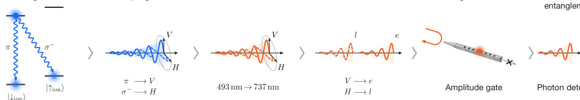
<figcaption class="paper-figure-caption"><b>Fig 1.</b> FIG. 1. Entangling a trapped-ion qubit and a solid-state quantum memory. (a, b) ➊A trapped 138Ba+ ion emits a 493.5 nm photon whose polarization is entangled with the ion spin state; ➋fiber coupling through a high-numerical-aperture objective maps σ−(π) polarization onto H (V ); ➌difference-frequency generation in a periodically poled lithium niobate (PPLN) crystal, pumped at 1492.3 nm, converts the photon to 737.45 nm and preserves its polarization; ➍an unbalanced interferometer converts polarization encoding into time-bin encoding, V (H) into early (late); ➎spin-dependent reflection from the SiV−imprints the memory spin state onto the time-bin qubit; ➏the returning photon is routed to the...</figcaption>
</figure>
<figure class="paper-figure-card">
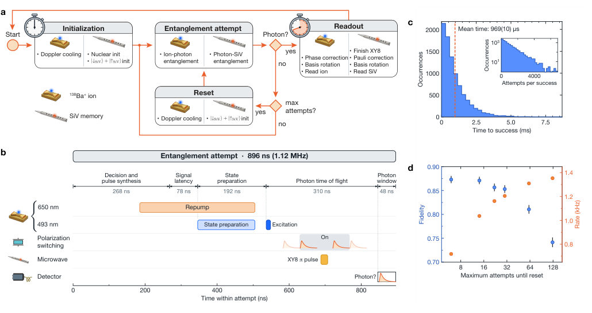
<figcaption class="paper-figure-caption"><b>Fig 2.</b> FIG. 2. Establishing heralded ion-memory entanglement. (a) Control-flow diagram of the sequence used to deliver each entangled state. Each box represents a step, with sub-steps separated by which sub-system they act on (trapped-ion or quantum memory). The steps are repeated as indicated until a photon is detected, heralding success. Upon success the Readout sequence compensates for which of the two detectors clicked and for its detection time using local gates on the two qubits (see main text and SM, Sec. S8). It also applies the required measurement basis rotation. We measure the time needed to generate the state starting from the beginning of the Initialization step until the beginning of...</figcaption>
</figure>
<figure class="paper-figure-card">
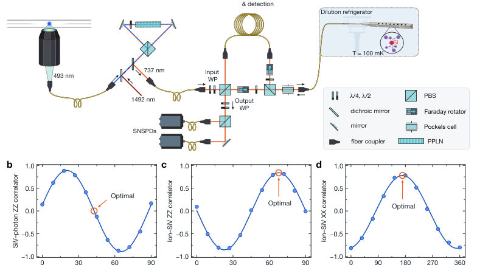
<figcaption class="paper-figure-caption"><b>Fig 3.</b> FIG. 3. Schematic of the apparatus and calibration procedure. (a) ➊A microscope objective with high numerical aperture (NA = 0.75) collects 493.5 nm photons from a single 138Ba+ ion in a four-rod Paul trap and couples them into a single-mode fiber; ➋difference-frequency generation in a PPLN crystal, pumped at 1492.3 nm in a Sagnac geometry, converts the photons to 737.45 nm and preserves their polarization; ➌an unbalanced interferometer (the basis converter) re-encodes the photonic qubit in early and late time bins, and a Pockels cell rotates the polarization of the late time bin so both bins reach the memory with the same polarization; ➍a quantum memory, which consists of a nanophotonic...</figcaption>
</figure>
</div>

<p><strong>Summary.</strong> This paper reports on a hybrid quantum networking protocol that entangles a trapped ion with a solid-state $   ext{SiV}^-$ memory using photon mediation. By integrating multiple quantum optical components, the researchers achieved a high entanglement rate of 1.03 kHz. This result is significant because it matches the operational speed required for next-generation trapped-ion quantum processors.</p>
<p><strong>Why it may be interesting.</strong> This work directly addresses the scalability bottleneck in quantum networking by demonstrating a high-rate, solid-state memory interface for trapped-ion qubits, which is crucial for realizing modular quantum computers.</p>
<details>
<summary>Detailed structure</summary>
<p><strong>Main problem.</strong> The core challenge is achieving rapid, high-fidelity entanglement between qubits housed in separate physical modules for scalable distributed quantum computing.</p>
<p><strong>Main result.</strong> The authors successfully demonstrated an entanglement generation rate of 1.03 kHz between a trapped ion and a solid-state memory, matching the cycle time of planned trapped-ion processors.</p>
<p><strong>Method.</strong> The entanglement is heralded by detecting a single photon resulting from a complex process involving ion-photon entanglement, quantum frequency conversion, basis encoding, and spin-dependent reflection from the solid-state memory.</p>
<p><strong>Model / system.</strong> The system is a heterogeneous quantum architecture combining a trapped $^{138}	ext{Ba}^+$ ion with a silicon-vacancy ($ ext{SiV}^-$) center embedded in a diamond nanophotonic cavity.</p>
<p><strong>Key observables.</strong> Average entanglement rate (1.03 kHz), Fidelity (87.9%), and measured two-qubit correlators ($\langle	ext{XX}
angle, \langle	ext{YY}
angle, \langle	ext{ZZ}
angle$).</p>
<p><strong>Important parameters / regimes.</strong> Entanglement rate of 1.03 kHz (one Bell pair per millisecond); fidelity of 87.9%; the process is limited by photon loss and heralding efficiency.</p>
<p><strong>Assumptions / limitations.</strong> The rate is limited by the heralding scheme and remaining loss; the fidelity is subject to error accumulation from multiple components (Ion, QFC, Memory, Detection).</p>
<p><strong>Figures summary.</strong> Figure 1 illustrates the overall process flow from ion-photon entanglement to heralded ion-$   ext{SiV}^-$ entanglement. Figure 2 details the experimental sequence, showing the time-to-success histogram confirming the measured rate.</p>
<p><strong>Paper structure.</strong> The paper details the physical setup, describes the multi-step entanglement protocol (including frequency conversion and basis encoding), presents the measured rate and fidelity, and analyzes the error budget across the various components.</p>
</details>
<details>
<summary>Abstract</summary>
<p>Distributed quantum computing requires rapid, high-fidelity entanglement between qubits in separate processor modules. Photonic links between single-atom qubits provide switchable, long-range connections, but photon loss limits their entanglement rate. Here we entangle a trapped $^{138}$Ba$^{+}$ ion with a silicon-vacancy (SiV$^{-}$) center in a diamond nanophotonic cavity. A photon emitted by the ion is converted in wavelength and encoding, reflected from the SiV$^{-}$--cavity system and detected, so that a single detected photon heralds entanglement. Including all conversion losses, we generate ion--SiV$^{-}$ Bell pairs at an average rate of 1.03(1)\,kHz with a fidelity of 87.9(7)\%. This is four times the rate of the fastest photonic link between two trapped ions and corresponds to one Bell pair per millisecond, matching the cycle time of planned trapped-ion processors.</p>
</details>
<p><sub><a href="#top">↑ back to top</a></sub></p>

<p><a id="paper-2610.11026"></a></p>
<h3 id="demonstration-of-subspace-search-variational-quantum-eigensolver-using-photonic-orbital-angular-momentum-qudits"><a href="http://arxiv.org/abs/2610.11026v1">Demonstration of subspace-search variational quantum eigensolver using photonic orbital angular momentum qudits</a></h3>
<p><strong>Authors:</strong> Kang-Min Hu, Myung-Hyun Sohn, Yong-Su Kim, Kwang Jo Lee, Hyun Woo Kim, Hyang-Tag Lim<br>
<strong>Type:</strong> experiment · <strong>Category:</strong> quantum information and computing · <strong>PDF:</strong> <a href="https://arxiv.org/pdf/2610.11026v1">https://arxiv.org/pdf/2610.11026v1</a><br>
<strong>Analysis basis:</strong> full PDF text, analyzed in chunks
<strong>Topic relevance:</strong> 🔥 <code>analog quantum simulation</code> <strong>4/5</strong> · 🔥 <code>quantum optics experiment</code> <strong>4/5</strong> · <code>QC/QI experiment</code> <strong>3/5</strong> · <code>interference shaping light</code> <strong>1/5</strong></p>
<div class="figure-strip-hint">↔ Scroll figures horizontally</div>
<div class="paper-figures-scroll">
<figure class="paper-figure-card">

<figcaption class="paper-figure-caption"><b>Fig 1.</b> FIG. 1. OAM qudit–based SSVQE procedure. At it- eration n, a set of N mutually orthogonal variational states {|ψj(⃗αn)⟩}N−1 j=0 is prepared by displaying the corresponding holograms on a SLM. Each state is measured on the photonic QPU (quantum processing unit) using a set of Pauli-string observables (implemented with a second SLM), from which the Hamiltonian expectation values are estimated. The CPU (classical processing unit) evaluates the SSVQE cost function L and a classical optimizer (COBYLA) updates the param- eters ⃗αn+1 to minimize L. The procedure is repeated until convergence, |∆n| = |⃗αn+1 −⃗αn| &lt; ϵ, yielding the optimized energies ⟨E0⟩min, ⟨E1⟩min, . . . , ⟨EN−1⟩min...</figcaption>
</figure>
<figure class="paper-figure-card">

<figcaption class="paper-figure-caption"><b>Fig 2.</b> FIG. 2. Experimental setup for SSVQE. Photon pairs are generated via type-II SPDC; the idler photon is detected by APD1 to herald the signal photon, which is sent to the QPU for SSVQE. In the QPU, the signal photon is prepared in the jth OAM ansatz qudit state |ψj(⃗αn)⟩by displaying the corresponding hologram on SLM1. The diffracted beam is spatially filtered (iris) and analyzed using measurement holograms on SLM2 to perform Pauli-string measurements. The measurement outcomes are processed by the CPU to evaluate the cost function L and update the variational parameters ⃗α via a classical optimizer. (SPDC, spontaneous parametric down-conversion; H, Half-wave plate; Q, Quarter-wave plate; P,...</figcaption>
</figure>
<figure class="paper-figure-card">

<figcaption class="paper-figure-caption"><b>Fig 3.</b> FIG. 3. Experimental SSVQE results for HeH+. a, Iterative evolution of the 15 variational angle parameters that control the four OAM-qudit ansatz states at R = 0.90 ˚A (equilibrium bond length). The parameter updates gradually decrease as the iteration number n increases. b, Iterative optimization of the estimated ground and excited state energies ⟨E0⟩, ⟨E1⟩, ⟨E2⟩, and ⟨E3⟩at R = 0.90 ˚A. Solid colored curves (red, orange, green and blue) denote experimental estimates, and black dashed lines indicate theoretical values. Error bars represent one standard deviation obtained from 1,000 Monte Carlo resamplings. c, Estimated energies as a function of interatomic distance R. The energy deviations...</figcaption>
</figure>
<figure class="paper-figure-card">

<figcaption class="paper-figure-caption"><b>Fig 4.</b> Figure 3c summarizes the estimated ground and ex- cited state energies of HeH+ as a function of interatomic distance R. The solid curves show the theoretical ener- gies, while the markers denote the experimental SSVQE results, revealing good agreement across the full range of R (inset). The lower panel of Fig. 3c plots the en- ergy deviations on a logarithmic scale, highlighting con- vergence of all four energy levels toward the theoretical</figcaption>
</figure>
<figure class="paper-figure-card">

<figcaption class="paper-figure-caption"><b>Fig 5.</b> FIG. 4. Experimental SSVQE results for a three-qubit Heisenberg chain. a, Iterative optimization of the esti- mated ground and excited state energies ⟨E0⟩, ⟨E1⟩, and ⟨E2⟩ at J/B = 1, where the spin–spin interaction and the external field contribute comparably. Solid colored curves (red, orange and green) show experimental estimates as a function of it- eration number n, and black dashed lines indicate theoretical values. Error bars represent one standard deviation obtained from 1,000 Monte Carlo resamplings. b, Estimated energies as a function of the ratio J/B.</figcaption>
</figure>
</div>

<p><strong>Summary.</strong> This paper demonstrates the use of Subspace-search VQE (SSVQE) to calculate excited state energies using photons whose quantum states are encoded in orbital angular momentum (OAM) qudits. By implementing this on a photonic platform, the authors show a scalable and resource-efficient method for simulating complex molecular and quantum chain Hamiltonians beyond ground state calculations.</p>
<p><strong>Why it may be interesting.</strong> This work directly addresses the challenge of excited state simulation in quantum chemistry using photonic hardware, establishing a resource-efficient pathway for high-dimensional quantum simulation.</p>
<details>
<summary>Detailed structure</summary>
<p><strong>Main problem.</strong> Accurately estimating excited state energies is crucial for interpreting photochemical processes, but variational quantum eigensolvers (VQEs) are typically limited to ground states.</p>
<p><strong>Main result.</strong> The authors successfully demonstrated Subspace-search VQE (SSVQE) on a photonic platform, estimating excited state energies for molecular and quantum chain systems.</p>
<p><strong>Method.</strong> They use SSVQE, a NISQ-friendly approach, by encoding quantum information in the orbital angular momentum (OAM) of single photons to estimate multiple eigenenergies simultaneously.</p>
<p><strong>Model / system.</strong> The experiment is performed on a photonic platform using single photons whose quantum states are encoded in OAM qudits. They apply this method to model a four-dimensional HeH+ molecule and an eight-dimensional Heisenberg chain.</p>
<p><strong>Key observables.</strong> Estimated excited state energies ($\langle E_j 
angle$) for the target Hamiltonians, and the convergence of these energies over optimization iterations.</p>
<p><strong>Important parameters / regimes.</strong> The variational parameters ($\vec{\alpha}$) controlling the shared variational unitary circuit, and the dimension of the Hilbert space ($d=4$ or $d=8$).</p>
<p><strong>Assumptions / limitations.</strong> The method avoids ancilla-based overlap measurements, relying instead on the coherent preparation and measurement of orthogonal OAM qudit states.</p>
<p><strong>Figures summary.</strong> Figure 1 illustrates the iterative SSVQE cycle between the QPU, CPU, and classical optimizer. Figure 2 shows the experimental setup using SLMs for state preparation and measurement. Figures 3 and 4 show the calculated energy spectra for HeH+ and the Heisenberg chain, respectively.</p>
<p><strong>Paper structure.</strong> The paper details the SSVQE algorithm, describes the photonic implementation using OAM qudits and SLMs, presents the experimental setup, and finally reports the successful estimation of excited state energies for the molecular and chain models.</p>
</details>
<details>
<summary>Abstract</summary>
<p>Accurate excited state energies are essential for interpreting fluorescence and photochemical processes, yet variational quantum eigensolvers (VQEs) on noisy intermediate-scale quantum (NISQ) hardware have largely been confined to ground states. Subspace-search VQE (SSVQE) offers a NISQ-friendly route to excited states without ancilla-based overlap measurements, however it has lacked an experimental demonstration since it requires the coherent preparation and manipulation of multiple orthogonal basis states under a shared variational unitary. Here we realize SSVQE on a photonic platform by encoding orthogonal qudit states in the orbital angular momentum of single photons and optimizing a shared variational circuit. We estimate excited state energies for a four-dimensional $\rm{HeH^+}$ molecule and an eight-dimensional Heisenberg chain, thereby demonstrating scalable excited state eigensolving in a high-dimensional Hilbert space. Our results establish photonic qudits as a resource-efficient pathway to excited state quantum simulation.</p>
</details>
<p><sub><a href="#top">↑ back to top</a></sub></p>

<p><a id="paper-2610.11360"></a></p>
<h3 id="when-does-interference-help-learning-kernel-geometry-as-a-pre-experimental-test-for-photonic-reservoir-computing"><a href="http://arxiv.org/abs/2610.11360v1">When Does Interference Help Learning? Kernel Geometry as a Pre-Experimental Test for Photonic Reservoir Computing</a></h3>
<p><strong>Authors:</strong> Oishik Kar, Aswath Babu H<br>
<strong>Type:</strong> theory · <strong>Category:</strong> quantum information and computing · <strong>PDF:</strong> <a href="https://arxiv.org/pdf/2610.11360v1">https://arxiv.org/pdf/2610.11360v1</a><br>
<strong>Analysis basis:</strong> full PDF text, analyzed in chunks
<strong>Topic relevance:</strong> 🔥 <code>interference shaping light</code> <strong>4/5</strong> · <code>analog quantum simulation</code> <strong>3/5</strong> · <code>Full counting statistics</code> <strong>2/5</strong> · <code>methods for driven-dissipative</code> <strong>1/5</strong> · <code>quantum measurements</code> <strong>1/5</strong> · <code>quantum optics experiment</code> <strong>1/5</strong></p>
<div class="figure-strip-hint">↔ Scroll figures horizontally</div>
<div class="paper-figures-scroll">
<figure class="paper-figure-card">

<figcaption class="paper-figure-caption"><b>Fig 1.</b> Fig. 1: Boson-sampling reservoir kernel estimation and the distinguishability dial. a, An input x ∈[0, 1]d is encoded as phase shifts between two Haar-random interferometers; N injected photons, post-selected on coincidences, yield the outcome distribution P(t | x) of dimension M N  . Indistinguishable and distinguishable photons generate the kernels KQ and KC, whose geometric difference g (Eq. (6)) quantifies the separation. b, The Hong–Ou–Mandel visibility V = I2 controls the photon statistics; this is the dial swept in Fig. 2.</figcaption>
</figure>
<figure class="paper-figure-card">

<figcaption class="paper-figure-caption"><b>Fig 2.</b> Fig. 2: Multi-photon interference broadens the feature spectrum. (a) Sorted eigenvalues of the indistinguishable- (KQ, blue) and distinguishable-photon (KC, orange) Gram matrices over n = 100 inputs (M = 12, N = 3, d = 12; D = 220). (b) Cumulative variance. In a representative interferometer realization the leading eigenvalue of KC exceeds that of KQ (10.0 vs. 5.7), while KQ reaches 90% of its trace in 61 dimensions against 33 for KC. Shaded regions: spread over 10 Haar realizations.</figcaption>
</figure>
<figure class="paper-figure-card">

<figcaption class="paper-figure-caption"><b>Fig 3.</b> Fig. 3: The geometric separation increases superlinearly with visibility. Geometric difference g(V ) between the indistinguishable- and distinguishable-photon feature kernels (square-root convention, Eq. (6)). Hardware source qualities are marked: the quantum processor of ref. [3] (V = 0.864) and the interferometric kernel experiment of ref. [4] (V = 0.972). Inset: at small visibility, g −1 is linear in V for N = 2, 3, 4.</figcaption>
</figure>
<figure class="paper-figure-card">

<figcaption class="paper-figure-caption"><b>Fig 4.</b> Fig. 4: The separation is sampling-accessible and inde- pendent of kernel conditioning. (a) Designed-task accuracy advantage (N = 3, M = 12, n = 180) under multinomial resampling of every outcome distribution at S shots, with task labels reconstructed from the noisy kernels at each budget. The advantage at S = 3 × 104 (the per-image sample budget of ref. [3]) matches the exact-arithmetic value. (b) Geometric difference and designed-task advantage at matched n = 180 for the rank-limited (M = 12, D = 220) and unconstrained (M = 20, D = 1140) configurations: g decreases by a factor of 5.6 while the task-level advantage is unchanged within error.</figcaption>
</figure>
<figure class="paper-figure-card">

<figcaption class="paper-figure-caption"><b>Fig 5.</b> Fig. 5: The learnable advantage is gated by kernel–task alignment. Accuracy advantage of the indistinguishable- over the distinguishable-photon kernel against the alignment gap ∆A = AQ −AC, for adversarially designed and natural tasks (M = 20, N = 3, D = 1140, n = 180). The advantage separates at the extremes of alignment; the fine-grained ordering among natural tasks is not resolved at these sample sizes (Supplementary Note 8).</figcaption>
</figure>
</div>

<p><strong>Summary.</strong> This work analyzes the role of multi-photon interference in photonic quantum machine learning by comparing the feature space generated by indistinguishable versus distinguishable photon statistics. The authors show that interference creates a quantifiable geometric separation in the kernel space, which confirms a potential quantum advantage. This protocol allows researchers to test for this advantage computationally before building complex quantum hardware.</p>
<p><strong>Why it may be interesting.</strong> It provides a rigorous, computable, and pre-experimental diagnostic tool (kernel geometry) to predict the potential quantum advantage in photonic quantum machine learning before large-scale hardware investment.</p>
<details>
<summary>Detailed structure</summary>
<p><strong>Main problem.</strong> To determine if multi-photon interference provides a task-independent advantage for quantum machine learning implemented with photonic reservoirs, resolving conflicting experimental reports.</p>
<p><strong>Main result.</strong> Interference creates a measurable geometric separation between the feature kernels ($K_Q$ vs $K_C$), which is learnable for adversarially constructed tasks, though the advantage on natural tasks is gated by kernel-task alignment.</p>
<p><strong>Method.</strong> The analysis treats the reservoir as a kernel machine, quantifying the geometric separation between the indistinguishable-photon kernel ($K_Q$) and the distinguishable-photon kernel ($K_C$) using kernel geometry metrics.</p>
<p><strong>Model / system.</strong> The system is photonic reservoir computing using a linear interferometer where classical inputs are encoded into phases. The process involves injecting $N$ photons and post-selecting on detection events, comparing interference statistics ($P_Q$) to classical statistics ($P_C$).</p>
<p><strong>Key observables.</strong> Kernel geometry separation ($g$), feature variance distribution, and task-level accuracy advantage ($\Delta A$).</p>
<p><strong>Important parameters / regimes.</strong> Hong–Ou–Mandel visibility ($V$), number of photons ($N$), and the sampling budget (number of shots).</p>
<p><strong>Assumptions / limitations.</strong> The analysis relies on treating the reservoir as a kernel machine and assumes that the geometric separation can be computed and measured robustly.</p>
<p><strong>Figures summary.</strong> Figures compare the reservoir kernel estimation and the distinguishability dial, contrasting the spectral contrast (variance spread) between $K_Q$ and $K_C$.</p>
<p><strong>Paper structure.</strong> The paper establishes the theoretical framework by defining the kernels based on photon statistics, quantifies the geometric separation, demonstrates its dependence on visibility, and finally tests the learnability of this advantage on both designed and natural task sets.</p>
</details>
<details>
<summary>Abstract</summary>
<p>Multi-photon interference is the resource most native to photonic quantum machine learning, yet experiments on photonic reservoirs have reported advantages, null results, and train-only effects. These outcomes cannot be compared: each measures task-dependent accuracy on different tasks and platforms. Here we resolve the question task-independently through the kernel geometry of boson-sampling feature maps. Interference redistributes feature variance across roughly twice as many effective dimensions as distinguishable-particle statistics, generating a large geometric separation between the corresponding kernels. The separation grows superlinearly with indistinguishability, is linear in Hong--Ou--Mandel visibility at small visibility for two to four photons, and retains approximately 80% of its magnitude at the source quality of current quantum processors. Under experimental sampling budgets the separation is learnable on adversarially constructed tasks (accuracy advantage +0.22 plus or minus 0.05) and an order of magnitude smaller on natural tasks, gated by kernel--task alignment. The results reconcile the existing experimental record and supply a pre-experimental protocol: kernel geometry establishes that an interference-specific learning resource exists, and task alignment determines whether a given task can access it; both are computable before committing significant hardware resources.</p>
</details>
<p><sub><a href="#top">↑ back to top</a></sub></p>

<p><a id="paper-2610.11071"></a></p>
<h3 id="analog-quantum-simulation-of-math119math-field-theory-with-a-superconducting-transmission-line"><a href="http://arxiv.org/abs/2610.11071v1">Analog quantum simulation of $φ^4$ field theory with a superconducting transmission line</a></h3>
<p><strong>Authors:</strong> Ilan T. Rosen, Neill C. Warrington, Max Hays, Christopher McNally, Joshua Lin, Stephen Sorokanich, Julian Bender<br>
<strong>Type:</strong> both · <strong>Category:</strong> other · <strong>PDF:</strong> <a href="https://arxiv.org/pdf/2610.11071v1">https://arxiv.org/pdf/2610.11071v1</a><br>
<strong>Analysis basis:</strong> full PDF text, analyzed in chunks
<strong>Topic relevance:</strong> 🔥 <code>analog quantum simulation</code> <strong>4/5</strong> · <code>Frenkel-Kontorova</code> <strong>2/5</strong> · <code>Keldysh / 2PI / non-Gaussian methods</code> <strong>1/5</strong> · <code>QC/QI experiment</code> <strong>1/5</strong> · <code>driven-dissipative phase transition</code> <strong>1/5</strong> · <code>methods for driven-dissipative</code> <strong>1/5</strong> · <code>non-equilibrium universality</code> <strong>1/5</strong></p>
<div class="figure-strip-hint">↔ Scroll figures horizontally</div>
<div class="paper-figures-scroll">
<figure class="paper-figure-card">

<figcaption class="paper-figure-caption"><b>Fig 1.</b> FIG. 4. Tank circuit potential. (a) A heavily quartic potential well is formed when EJA/EJ &gt; n. (b) A double- well potential is formed when EJA/EJ &lt; n. Tank circuit parameters from Table II are used.</figcaption>
</figure>
<figure class="paper-figure-card">

<figcaption class="paper-figure-caption"><b>Fig 2.</b> FIG. 6. Non-perturbative regime. Comparison between particle masses computed with lattice field theory (black points) and perturbation theory (PT) at first through third order in ˜λ (blue, orange, green lines, respectively), where ω0 = 5.03GHz. The interaction strength produced by Table II parameters is indicated in red. Inset panel shows compar- ison between perturbative and nonperturbative results near ˜λ = 0.</figcaption>
</figure>
<figure class="paper-figure-card">

<figcaption class="paper-figure-caption"><b>Fig 3.</b> FIG. 5. Comparing NLTL to ϕ4 theory. Fractional dif- ference between energy levels of the NLTL and ϕ4 theory (Difference = (Eϕ4 −ENLTL)/Eϕ4, where Eϕ4, ENLTL respec- tively denote energies computed in ϕ4 and NLTL). From left to right energies correspond to the kℓ/2π = 0, 5, 10, 20 single particle energy states then the zero-momentum two-particle state.</figcaption>
</figure>
<figure class="paper-figure-card">

<figcaption class="paper-figure-caption"><b>Fig 4.</b> FIG. 8. Energy spectrum of one tank circuit in the single-well regime. The potential is indicated by the black line, and the wavefunctions of the ground state and first two excited states are shown offset by their energy. Tank circuit parameters are given in the top row of Table II.</figcaption>
</figure>
<figure class="paper-figure-card">

<figcaption class="paper-figure-caption"><b>Fig 5.</b> FIG. 7. Continuum limit. Computation of the single par- ticle dispersion relation E(k) at Table II parameters (gray points), at parameters corresponding to 1/2 the lattice spac- ing (black points) and the continuum limit (blue). Inset shows the fractional error in lattice-computed energies relative to the continuum limit. Points are shifted horizontally for visibility.</figcaption>
</figure>
</div>

<p><strong>Summary.</strong> This paper proposes using a superconducting transmission line as an analog quantum simulator for $(1+1)$-dimensional $\phi^4$ field theory. By tuning circuit parameters, the system can mimic both simple particle scattering (single-well) and complex topological dynamics like kink-antikink collisions (double-well). This offers a powerful, experimentally accessible platform for studying interacting quantum field dynamics.</p>
<p><strong>Why it may be interesting.</strong> This work provides a concrete, hardware-based realization of simulating complex, interacting quantum field theories, bridging superconducting circuit QED with fundamental condensed matter physics problems.</p>
<details>
<summary>Detailed structure</summary>
<p><strong>Main problem.</strong> The core challenge is understanding the real-time dynamics of strongly interacting quantum field theories, which is difficult using current computational or experimental methods.</p>
<p><strong>Main result.</strong> The superconducting transmission line successfully emulates $(1+1)$-dimensional $\phi^4$ field theory, allowing for the simulation of both particle scattering and topological kink-antikink collisions.</p>
<p><strong>Method.</strong> The authors use analog quantum simulation by engineering a superconducting circuit whose time evolution mimics the field theory dynamics, validated by lattice Monte Carlo calculations.</p>
<p><strong>Model / system.</strong> The physical platform is a Non-linear Transmission Line (NLTL) built from fluxonium-like superconducting circuits. This system is tuned to emulate the Lagrangian of a $\phi^4$ field theory, allowing access to both single-well and symmetry-broken double-well potentials.</p>
<p><strong>Key observables.</strong> Scattering cross-sections for particle wave packets, and the dynamics of topological kinks and anti-kinks.</p>
<p><strong>Important parameters / regimes.</strong> The ratio of circuit parameters ($E_{JA}/E_J$ vs $n$) controls the potential regime (single-well vs. double-well). The simulation requires the continuum limit approximation.</p>
<p><strong>Assumptions / limitations.</strong> The method relies on the ability to fabricate a sufficiently large, controlled superconducting circuit, and approximations are used to derive the effective continuum action.</p>
<p><strong>Figures summary.</strong> Figures illustrate the free-field structure, the nonlinear circuit components, the resulting potential wells (single-well and double-well), and the convergence of the dispersion relation to the continuum theory.</p>
<p><strong>Paper structure.</strong> The paper establishes the physical system (NLTL) and its Hamiltonian, confirms its equivalence to the continuum $\phi^4$ theory via lattice calculations, and then details how tuning parameters allows access to different physical regimes (single-well for scattering, double-well for solitons).</p>
</details>
<details>
<summary>Abstract</summary>
<p>Understanding the dynamics of interacting quantum fields remains a fundamental challenge. We propose a superconducting transmission line for analog quantum simulation of $(1+1)$-dimensional $φ^4$ field theory. The transmission line comprises fluxonium-like circuit elements whose continuous and unbounded phase variables encode a scalar field without Hilbert-space truncation. Their anharmonic potentials provide strong interactions. Tuning the circuit parameters provides access to two distinct regimes. In the first, the transmission line emulates $φ^4$ field theory with a single-well potential. We confirm this correspondence through lattice Monte Carlo calculations of the low-energy spectra of both the circuit and lattice $φ^4$ theory. This regime enables scattering experiments between counter-propagating particle wave packets. The second parameter set yields a double-well potential that emulates $φ^4$ theory in the symmetry-broken phase and hosts degenerate vacua. Interfaces between the two vacua form topological kinks, and the transmission line can simulate kink-antikink collisions. We present state preparation and measurement protocols for both collision experiments, enabling spatially resolved, real-time studies of particle and soliton scattering in an interacting quantum field theory.</p>
</details>
<p><sub><a href="#top">↑ back to top</a></sub></p>

<p><a id="paper-2610.11445"></a></p>
<h3 id="deterministic-generation-of-large-scale-photonic-ghz-states-utilizing-spin-echo-in-a-solid-state-quantum-light-source"><a href="http://arxiv.org/abs/2610.11445v1">Deterministic generation of large-scale photonic GHZ states utilizing spin echo in a solid-state quantum light source</a></h3>
<p><strong>Authors:</strong> Zu-En Su, Dan Cogan, Oded Kenneth, Shunfa Liu, Jin Liu, David Gershoni<br>
<strong>Type:</strong> experiment · <strong>Category:</strong> quantum information and computing · <strong>PDF:</strong> <a href="https://arxiv.org/pdf/2610.11445v1">https://arxiv.org/pdf/2610.11445v1</a><br>
<strong>Analysis basis:</strong> full PDF text, analyzed in chunks
<strong>Topic relevance:</strong> 🔥 <code>QC/QI experiment</code> <strong>4/5</strong> · <code>quantum optics experiment</code> <strong>3/5</strong> · <code>Tavis-Cummings &amp; cavity-many-emitter</code> <strong>1/5</strong> · <code>analog quantum simulation</code> <strong>1/5</strong> · <code>interference shaping light</code> <strong>1/5</strong> · <code>quantum measurements</code> <strong>1/5</strong></p>
<div class="figure-strip-hint">↔ Scroll figures horizontally</div>
<div class="paper-figures-scroll">
<figure class="paper-figure-card">

<figcaption class="paper-figure-caption"><b>Fig 1.</b> Figure 1. The Setup. (a) Schematic description of the QD-based device. RM: rate multiplier, BS: beam splitter, PBS: polarizing beam splitter, SNSPD: superconducting nanowire single photon detector, LCVR: liquid crystal variable retarder, DM: dichroic mirror, and POL: polarizer. (b) Schematic of the optical Π-system between the heavy hole (HH) and the positive trion. |±Z⟩represents a right- (left-) hand circularly polarized photon. φh(t) marks the acquired phase due to the precession of the HH (trion in opposite direction) after (before) the radiative recombination.</figcaption>
</figure>
<figure class="paper-figure-card">

<figcaption class="paper-figure-caption"><b>Fig 2.</b> Figure 2. The GHZ generation method. Schematic description of the temporal sequence of operations for generating the GHZ state. i) Hole spin initialization in a |±Y ⟩state by projecting the first photon polarization on a circular base and timed hole spin precession of Tp/4. ii) Spin-N-photon entanglement by applying the E-CNOT gate N times, and iii) Final HH spin projection onto a |∓Y ⟩state by detecting circularly polarized photon following Tp/4 delayed excitation. The spin-multiphoton state is diagrammatically depicted above each step. The excitation period Toptimal is tuned to null the average acquired phase φt + φh. τr is the radiative lifetime and TM is the temporal width of the...</figcaption>
</figure>
<figure class="paper-figure-card">

<figcaption class="paper-figure-caption"><b>Fig 3.</b> Figure 3. Characterization of the multiphoton GHZ state. (a) Upper panel: Schematic description of the experiment. Lower panel: Rectilinear degree of polarization (ωn-witnesses) of the multiphoton state as a function of the retarder’s phase. 3-photon (red) and 4-photon (blue) correlation measurements of the witnesses ˆω1 and ˆω2, respectively. Points with error bars represent the measurements, and color-matched solid lines are best fits to ˆωn(φ) = −Vˆωn cos(nφ), where n = 1, 2 and Vˆωn are the fitted corresponding visibilities. (b) The localizable entanglement (LE) in the multiphoton GHZ state as a function of the number of photons in the state. The inset presents a full tomographic...</figcaption>
</figure>
<figure class="paper-figure-card">

<figcaption class="paper-figure-caption"><b>Fig 4.</b> Figure 4. Optimization of the GHZ state generation. (a) A quantum circuit diagram describing the multiphoton GHZ state generation. (b) Lower panel: The calculated average accumulated phase ⟨φ⟩ during one cycle versus the excitation rate for various magnetic fields. The shaded areas represent one standard deviation ⟨∆φ⟩. The black arrow indicates the field-independent optimal rate at which ⟨φ⟩= 0. Upper panel: The measured (data points) and calculated (color-matched solid lines) ZZ-witness versus the excitation rate for various magnetic fields. (c) The measured (black data points) and calculated (solid red line for the spin evolution model [36] and dashed black line assuming normally...</figcaption>
</figure>
</div>

<p><strong>Summary.</strong> This paper reports the experimental demonstration of a high-rate, deterministic source for large-scale photonic GHZ states using semiconductor quantum dots. The key innovation is leveraging a 'natural spin echo' effect to maintain coherence and generate entanglement among more than a dozen photons. This work significantly advances the feasibility of solid-state quantum light sources for quantum information technologies.</p>
<p><strong>Why it may be interesting.</strong> This work directly addresses scalable quantum information processing by providing a high-rate, solid-state source of highly entangled photonic states, which is crucial for quantum networking and computation.</p>
<details>
<summary>Detailed structure</summary>
<p><strong>Main problem.</strong> The deterministic generation of large-scale photonic Greenberger-Horne-Zeilinger (GHZ) states is demonstrated using a solid-state quantum light source.</p>
<p><strong>Main result.</strong> The authors achieved deterministic generation of photonic GHZ states containing more than a dozen indistinguishable photons at a rate exceeding 1 GHz.</p>
<p><strong>Method.</strong> The process utilizes a novel 'natural spin echo' mechanism in a semiconductor quantum dot to establish spin-photon entanglement, followed by repeated entangling gates.</p>
<p><strong>Model / system.</strong> The platform is a semiconductor quantum dot (QD) embedded in a planar microcavity. The mechanism relies on the opposite precession directions of electron and hole spins to nullify accumulated phase.</p>
<p><strong>Key observables.</strong> GHZ state visibility ($\langle\omega_N
angle$), Localizable Entanglement ($\zeta_{LE}$), and the ZZ-witness ($  ext{ZZ}$).</p>
<p><strong>Important parameters / regimes.</strong> Photon generation rate (&gt;1 GHz), number of entangled photons (&gt;12), and the optimal excitation rate ($\Gamma_{	ext{opt}}^{	ext{exc}}$).</p>
<p><strong>Assumptions / limitations.</strong> The process is limited by electron spin decoherence ($   au_{    ext{dec}}$), and ideal operation requires tuning the excitation rate to nullify the accumulated phase.</p>
<p><strong>Figures summary.</strong> Figures illustrate the setup schematic, the temporal sequence for GHZ generation (involving E-CNOT gates), and plots showing the dependence of entanglement witnesses and process fidelity on external magnetic fields and excitation rates.</p>
<p><strong>Paper structure.</strong> The paper details the physical mechanism using spin echo, outlines the multi-step process for generating the GHZ state via entanglement gates, presents quantitative measurements of state fidelity and entanglement length, and discusses optimization parameters.</p>
</details>
<details>
<summary>Abstract</summary>
<p>Quantum technologies witness rapid contemporary developments transitioning from abstract scientific ideas and fundamental demonstrations, into systems of sufficient quality and scale, enabling real applications. Photonic quantum technologies are playing a pivotal role in these developments, since photons are robust, easily controlled, detect and measured, thus qualify as flying carriers of quantum information and entanglement distributers. The efforts to develop photonic quantum technologies benefit from the maturity of the classical optical technologies. It was shown that even a source of heralded three entangled photons is sufficient for building large scale quantum computers using otherwise classical optical elements. Here, we demonstrate a novel semiconductor quantum dot based device, which deterministically generate at GHz rates, indistinguishable single photons in a robust Greenberger-Horne-Zeilinger (GHZ) state of more than a dozen photons. The device utilizes novel natural spin echo concept, provided by the opposite precession directions of the negative and positive carriers' spins in the excited and ground levels of the periodically excited dot, respectively. The excitation rate is finely tuned to nullify the phase acquired by both spins' precession. Our record long GHZ state producing device can yet be feasibly improved to provide higher-rate, brighter and more robust deterministic GHZ source, significantly reducing the overhead requirements for photonic quantum technologies.</p>
</details>
<p><sub><a href="#top">↑ back to top</a></sub></p>

<p><a id="paper-2610.11428"></a></p>
<h3 id="experimental-measurement-device-independent-quantum-key-distribution-with-flawed-state-preparation-over-300-km"><a href="http://arxiv.org/abs/2610.11428v1">Experimental Measurement-Device-Independent Quantum Key distribution with Flawed State-Preparation over 300 km</a></h3>
<p><strong>Authors:</strong> Yi-Fei Lu, Yan-Yang Zhou, Yang Wang, Yu Zhou, Xiao-Lei Jiang, Xin-Hang Li, Hai-Tao Wang, Yan-Mei Zhao, Jia-Ji Li, Chun Zhou, Hong-Wei Li, Lin-Jie Zhou, Wan-Su Bao<br>
<strong>Type:</strong> experiment · <strong>Category:</strong> quantum information and computing · <strong>PDF:</strong> <a href="https://arxiv.org/pdf/2610.11428v1">https://arxiv.org/pdf/2610.11428v1</a><br>
<strong>Analysis basis:</strong> full PDF text, analyzed in chunks
<strong>Topic relevance:</strong> 🔥 <code>quantum optics experiment</code> <strong>4/5</strong> · <code>QC/QI experiment</code> <strong>3/5</strong> · <code>interference shaping light</code> <strong>2/5</strong> · <code>quantum measurements</code> <strong>2/5</strong></p>
<div class="figure-strip-hint">↔ Scroll figures horizontally</div>
<div class="paper-figures-scroll">
<figure class="paper-figure-card">

<figcaption class="paper-figure-caption"><b>Fig 1.</b> Figure 1: Experimental set-up. (a) MDI-QKD experimental system. The MDI-QKD system is con-</figcaption>
</figure>
<figure class="paper-figure-card">

<figcaption class="paper-figure-caption"><b>Fig 2.</b> Figure 2: Results of intensity and phase characterization. The first two rows illustrate the intensity</figcaption>
</figure>
<figure class="paper-figure-card">

<figcaption class="paper-figure-caption"><b>Fig 3.</b> Figure 3: Secret key rate (SKR) in logarithmic scale versus transmission distance between Alice and</figcaption>
</figure>
<figure class="paper-figure-card">

<figcaption class="paper-figure-caption"><b>Fig 4.</b> Figure 5: The frequency difference of two free-running lasers.</figcaption>
</figure>
</div>

<p><strong>Summary.</strong> This paper reports an experimental MDI-QKD system that successfully maintains high security and performance over distances exceeding 300 km. The key innovation is the rigorous incorporation of State-Preparation Uncertainty (SPU) into the security analysis using the operator dominance method. This work significantly advances the practical feasibility of long-haul quantum communication networks.</p>
<p><strong>Why it may be interesting.</strong> This work pushes the boundaries of practical quantum communication by providing a concrete, long-distance demonstration of QKD security under realistic, imperfect source conditions, which is highly relevant to quantum optics and quantum information theory.</p>
<details>
<summary>Detailed structure</summary>
<p><strong>Main problem.</strong> The paper addresses the challenge of implementing secure Quantum Key Distribution (QKD) when quantum sources are imperfect, specifically by accounting for State-Preparation Uncertainty (SPU).</p>
<p><strong>Main result.</strong> The authors achieved a record secure key distribution distance of over 300 km while rigorously accounting for the general form of SPU, demonstrating robust performance.</p>
<p><strong>Method.</strong> They utilized the operator dominance method to derive tight theoretical bounds and performed a complex MDI-QKD experiment involving characterization of phase and intensity fluctuations.</p>
<p><strong>Model / system.</strong> The system is an experimental Measurement-Device-Independent QKD (MDI-QKD) setup using free-running continuous-wave lasers at 1550.12 nm. Encoding uses time-bin and phase encoding, and the setup includes multiple modulators and single-photon detectors.</p>
<p><strong>Key observables.</strong> Secret Key Rate (SKR), secure key distribution distance, counting rates ($Q[\mu,\mu]$), and bit error rates ($E_z$).</p>
<p><strong>Important parameters / regimes.</strong> Distance (up to 303.57 km), detection efficiency ($\approx 55\%$), and the degree of State-Preparation Uncertainty (SPU).</p>
<p><strong>Assumptions / limitations.</strong> The analysis assumes the prepared states are independent and identically distributed (i.i.d.), though the method is designed to handle general SPU forms.</p>
<p><strong>Figures summary.</strong> Figures illustrate the MDI-QKD setup, separate characterization schemes for phase and intensity, and plots showing the SKR versus transmission distance.</p>
<p><strong>Paper structure.</strong> The paper details the experimental setup, describes the characterization of SPU sources, develops the theoretical framework using operator dominance, and presents the measured SKR results over increasing distances.</p>
</details>
<details>
<summary>Abstract</summary>
<p>Quantum key distribution (QKD) promises theoretically secure communication. However, it encounters challenges in implementation security and performance due to inevitable device imperfections. Since the proposal of measurement-device-independent (MDI) QKD, the critical step toward practical security is to secure QKD with imperfect sources. The source imperfections manifest as state-preparation uncertainty (SPU) in various aspects, e.g., encoding uncertainty, intensity fluctuation, and imperfect vacuum states. Here, we perform an MDI-QKD experiment and achieve both high practical security and superior performance. We address the general form of SPU and guarantee a tight estimation of the secret key rate based on the operator dominance method. We achieve secure key distribution over 303.37 km, which not only represents the farthest distance in experiments involving SPU but also considers the most SPU scenarios. Our experimental results represent a significant step toward promoting practical and secure quantum communication.</p>
</details>
<p><sub><a href="#top">↑ back to top</a></sub></p>

<p><a id="paper-2610.12045"></a></p>
<h3 id="mass-quench-in-interacting-finite-size-quantum-field-system"><a href="http://arxiv.org/abs/2610.12045v1">Mass quench in interacting finite-size quantum field system</a></h3>
<p><strong>Authors:</strong> Grachik A Simonian, Alexey G. Mikhaylenko, Andrew G. Semenov<br>
<strong>Type:</strong> theory · <strong>Category:</strong> statistical mechanics · <strong>PDF:</strong> <a href="https://arxiv.org/pdf/2610.12045v1">https://arxiv.org/pdf/2610.12045v1</a><br>
<strong>Analysis basis:</strong> full PDF text, analyzed in chunks
<strong>Topic relevance:</strong> 🔥 <code>Keldysh / 2PI / non-Gaussian methods</code> <strong>4/5</strong> · <code>non-equilibrium universality</code> <strong>3/5</strong> · <code>analog quantum simulation</code> <strong>2/5</strong> · <code>interference shaping light</code> <strong>1/5</strong> · <code>methods for driven-dissipative</code> <strong>1/5</strong></p>
<div class="figure-strip-hint">↔ Scroll figures horizontally</div>
<div class="paper-figures-scroll">
<figure class="paper-figure-card">

<figcaption class="paper-figure-caption"><b>Fig 1.</b> Figure 1. Time evolution of the effective mass Meff(t) after a quantum quench depending on the</figcaption>
</figure>
<figure class="paper-figure-card">

<figcaption class="paper-figure-caption"><b>Fig 2.</b> Figure 2. Light cone of the retarded function</figcaption>
</figure>
<figure class="paper-figure-card">

<figcaption class="paper-figure-caption"><b>Fig 3.</b> Figure 3. Light cone and comparison of retarded functions calculated via two different methods</figcaption>
</figure>
</div>

<p><strong>Summary.</strong> This work studies how a quantum scalar field evolves after its mass is suddenly changed (a quench) in a finite system. Using advanced quantum field theory techniques, the authors predict a unique, measurable anomaly in the effective mass at a specific time related to the system size. This effect is shown to be a consequence of wave interference dictated by the system's periodic boundaries.</p>
<p><strong>Why it may be interesting.</strong> The study provides a concrete theoretical framework for understanding finite-size effects in non-equilibrium quantum dynamics, which is highly relevant for interpreting results from ultracold atom experiments in periodic traps.</p>
<details>
<summary>Detailed structure</summary>
<p><strong>Main problem.</strong> The paper theoretically investigates the non-equilibrium evolution of correlation functions for a quantum scalar field following a sudden change (quench) in its mass.</p>
<p><strong>Main result.</strong> A strong, characteristic disturbance in the effective mass is observed at a time corresponding to half the system size, which is attributed to the interference of counter-propagating fluctuations due to periodic boundary conditions.</p>
<p><strong>Method.</strong> The analysis employs the Keldysh–Schwinger formalism, solving the Dyson equations numerically in the one-loop approximation (Hartree–Fock).</p>
<p><strong>Model / system.</strong> The model is a one-dimensional real scalar quantum field theory ($\phi^4$ theory) confined to a finite system of length $L$ with periodic boundary conditions. The system undergoes a mass quench from $m_0$ to $m_1$ at $t=0$.</p>
<p><strong>Key observables.</strong> Keldysh (statistical) Green’s function, spectral function, and the self-consistently determined effective mass $M_{eff}(t)$.</p>
<p><strong>Important parameters / regimes.</strong> System size $L$ (varied), coupling constant $\lambda$, and the initial/final masses $m_0, m_1$.</p>
<p><strong>Assumptions / limitations.</strong> The analysis assumes a spatially uniform distribution with zero mean field ($\langle\varphi
angle=0$) and requires a counterterm to handle vacuum divergences.</p>
<p><strong>Figures summary.</strong> Figure 1 shows the time evolution of $M_{eff}(t)$ for varying $L$. Figure 2 illustrates the light cone structure of the retarded Green’s function. Figure 3 compares results obtained on a ring versus an infinite line.</p>
<p><strong>Paper structure.</strong> The paper develops the formalism using the Keldysh approach, solves the equations numerically in the one-loop approximation, and then confirms the key findings by comparing results obtained using different computational methods (e.g., ring vs. line boundary conditions).</p>
</details>
<details>
<summary>Abstract</summary>
<p>In this work, we theoretically investigate the non-equilibrium evolution of the correlation functions of a quantum scalar field following a mass quantum quench in a finite-size system. The self-consistent equation for the Keldysh (statistical) correlation function is solved numerically in the one-loop approximation. A specific spatio-temporal effect is observed: at a point in time approximately equal to half the system size, the effective mass experiences a strong disturbance. It is shown that this effect is driven by the interference of counter-propagating wave fronts of fluctuations that propagate within the light cone and is induced by periodic boundary conditions.</p>
</details>
<p><sub><a href="#top">↑ back to top</a></sub></p>

<p><a id="paper-2610.10715"></a></p>
<h3 id="nonlinear-feedback-in-josephson-circuit-optimization-application-to-a-kerr-reversal-jtwpa"><a href="http://arxiv.org/abs/2610.10715v1">Nonlinear Feedback in Josephson Circuit Optimization: Application to a Kerr-Reversal JTWPA</a></h3>
<p><strong>Authors:</strong> Emanuele Palumbo, Alessandro Alocco, Andrea Celotto, Luca Fasolo, Bernardo Galvano, Patrizia Livreri, Emanuele Enrico<br>
<strong>Type:</strong> both · <strong>Category:</strong> other · <strong>PDF:</strong> <a href="https://arxiv.org/pdf/2610.10715v1">https://arxiv.org/pdf/2610.10715v1</a><br>
<strong>Analysis basis:</strong> full PDF text, analyzed in chunks
<strong>Topic relevance:</strong> 🔥 <code>quantum measurements</code> <strong>4/5</strong> · <code>driven-dissipative phase transition</code> <strong>3/5</strong> · <code>methods for driven-dissipative</code> <strong>3/5</strong> · <code>Keldysh / 2PI / non-Gaussian methods</code> <strong>1/5</strong></p>
<div class="figure-strip-hint">↔ Scroll figures horizontally</div>
<div class="paper-figures-scroll">
<figure class="paper-figure-card">

<figcaption class="paper-figure-caption"><b>Fig 1.</b> Fig. 2. Equivalent lumped-element circuit of the 4WM JTWPA adopted in this work, following the model reported in [12]. The transmission line is formed by a periodic array of unit cells, each comprising a Superconducting Nonlinear Asymmetric Inductive eLement (SNAIL) and a ground capacitance Cg. Each SNAIL consists of one small JJ with critical current rI0 and three large JJs with critical current I0, with r = 0.07 the junction asymmetry function. The magnetic bias is represented by a periodic flux line mutually coupled to the SNAIL inductive branches, producing the external flux Φext. Adjacent cells have reversed orientations, resulting in alternating flux biases ±Φext and suppressing the...</figcaption>
</figure>
<figure class="paper-figure-card">

<figcaption class="paper-figure-caption"><b>Fig 2.</b> Fig. 1. Overview of the JCO optimization workflow. (a) The device parameter space is explored through linear simulations using the metric M. (b) Linear optimization identifies the selected circuit configuration. (c) The selected configuration is analyzed under pumped conditions, and information from the pumped response is fed back into the linear stage of the subsequent optimization cycle.</figcaption>
</figure>
<figure class="paper-figure-card">

<figcaption class="paper-figure-caption"><b>Fig 3.</b> Fig. 3. Comparison between simulated and measured amplifier performance for the same device configuration, I0 = 2.19 µA, Cg = 250 fF, and Φext = 0.5Φ0. Further details on the device architecture and experimental implementation are reported in [12]. (a) Two-dimensional maps of the signal gain, expressed as |S21| in dB and averaged over the 5–9 GHz signal band, as a function of pump frequency and pump power, obtained from simulations (left) and measurements (right). The markers indicate the pump conditions considered for the frequency-resolved comparison in (b). (b) Simulated (red) and measured (blue) signal gain, expressed as |S21| in dB, as a function of signal frequency at fp = 6.5 GHz....</figcaption>
</figure>
<figure class="paper-figure-card">

<figcaption class="paper-figure-caption"><b>Fig 4.</b> Fig. 4. Comparison between the linear and nonlinear circuit responses over the (I0, Cg) design space. The flux bias is fixed at Φext = 0.5Φ0, and the nonlinear simulations are performed with a pump at fp = 7 GHz and Pp = −70 dBm, corresponding to the maximum-gain operating point identified for the configuration selected by the linear optimization. (a) Linear metric Mlin derived from the input reflection coefficient. (b) Corresponding metric Mnonlin evaluated from nonlinear harmonic balance simulations. (c) Linear- to-nonlinear discrepancy ∆M = Mnonlin −Mlin. (d) Average gain in the 5–9 GHz signal band. Gray regions indicate configurations rejected by the third-harmonic condition defined in...</figcaption>
</figure>
</div>

<p><strong>Summary.</strong> This paper addresses the computational bottleneck in optimizing nonlinear Josephson microwave circuits by proposing a nonlinear feedback extension to the standard optimization workflow. The method uses the difference between linear and pumped simulation results as a diagnostic observable to guide subsequent, more accurate optimization cycles. This allows for the efficient design of high-performance parametric amplifiers by incorporating complex nonlinear physics into the initial design phase.</p>
<p><strong>Why it may be interesting.</strong> This work bridges advanced circuit simulation techniques with quantum optics/AMO concepts by treating the optimization of nonlinear quantum devices (like parametric amplifiers) as an iterative, feedback-controlled process, which has parallels in quantum control theory.</p>
<details>
<summary>Detailed structure</summary>
<p><strong>Main problem.</strong> Optimizing Josephson-based nonlinear microwave devices is computationally expensive because standard methods fail to account for pump-induced nonlinear effects during initial linear parameter sweeps.</p>
<p><strong>Main result.</strong> The authors introduce a nonlinear feedback mechanism using the discrepancy between linear and pumped response metrics, showing this observable contains crucial information about amplifier performance missed by linear optimization.</p>
<p><strong>Method.</strong> They developed a two-stage optimization framework, extending the initial linear search with an iterative feedback loop that incorporates nonlinear simulation results back into the linear metric update.</p>
<p><strong>Model / system.</strong> The system modeled is a Josephson Traveling-Wave Parametric Amplifier (JTWPA) utilizing a reversed-Kerr architecture. The model is implemented using a lumped-element circuit description.</p>
<p><strong>Key observables.</strong> Input reflection coefficient ($S_{11}$) in the signal band, third-harmonic suppression ($S_{11,dB}(3f_p)$), and the discrepancy ($\Delta M$) between linear and pumped metric values.</p>
<p><strong>Important parameters / regimes.</strong> Circuit parameters like inductive bias ($I_0$) and ground capacitance ($C_g$), and operating frequencies (5–9 GHz signal band).</p>
<p><strong>Assumptions / limitations.</strong> The initial linear optimization ignores nonlinear effects like impedance renormalization and Kerr-induced dispersion modifications; the feedback observable must mimic the gain landscape features.</p>
<p><strong>Figures summary.</strong> Figure 3 validates the model by comparing simulated and measured signal gain. Figure 4 compares the linear metric, nonlinear metric, discrepancy ($\Delta M$), and average gain across the parameter space, highlighting the difference between linear and maximum-gain configurations.</p>
<p><strong>Paper structure.</strong> The paper outlines the limitations of the standard two-stage optimization (JCO), introduces the nonlinear feedback extension, validates the model against experimental gain measurements, and finally demonstrates the use of the discrepancy ($\Delta M$) as the candidate feedback observable for iterative optimization.</p>
</details>
<details>
<summary>Abstract</summary>
<p>Optimizing Josephson-based nonlinear microwave devices is computationally demanding because the straightforward approach requires exploring broad circuit parameter spaces through expensive nonlinear simulations. Josephson Circuits Optimizer addresses this problem by using harmonic balance simulations in two stages: fast linear simulations to select promising circuit configurations according to properties such as impedance and phase matching, followed by nonlinear simulations to optimize their operating conditions. However, pump-induced effects such as impedance renormalization and Kerr-induced modifications of phase matching are not captured during the initial linear stage. We therefore introduce a nonlinear feedback extension that transfers information from the pumped response back to the linear optimization. The approach is investigated using a Josephson traveling-wave parametric amplifier with a reversed-Kerr architecture, whose model is validated against experimental gain measurements. We then evaluate the difference between the linear and pumped response values of a metric based on the input reflection coefficient, while excluding configurations with insufficient third-harmonic suppression. This discrepancy is considered a candidate feedback observable, as it exhibits features similar to the gain landscape, supporting its use in subsequent optimization cycles.</p>
</details>
<p><sub><a href="#top">↑ back to top</a></sub></p>

<p><a id="paper-2610.12264"></a></p>
<h3 id="experimental-generation-of-asymmetric-keys-from-the-parity-structure-of-a-two-photon-six-qubit-entangled-state"><a href="http://arxiv.org/abs/2610.12264v1">Experimental generation of asymmetric keys from the parity structure of a two-photon six-qubit entangled state</a></h3>
<p><strong>Authors:</strong> Sanchari Chakraborti, Soumya Asokan, Sunita Khoth, Sujai Matta, C. M. Chandrashekar<br>
<strong>Type:</strong> experiment · <strong>Category:</strong> quantum information and computing · <strong>PDF:</strong> <a href="https://arxiv.org/pdf/2610.12264v1">https://arxiv.org/pdf/2610.12264v1</a><br>
<strong>Analysis basis:</strong> full PDF text, analyzed in chunks
<strong>Topic relevance:</strong> 🔥 <code>QC/QI experiment</code> <strong>4/5</strong> · <code>quantum optics experiment</code> <strong>3/5</strong> · <code>interference shaping light</code> <strong>1/5</strong> · <code>quantum measurements</code> <strong>1/5</strong></p>
<div class="figure-strip-hint">↔ Scroll figures horizontally</div>
<div class="paper-figures-scroll">
<figure class="paper-figure-card">

<figcaption class="paper-figure-caption"><b>Fig 1.</b> Figure 1. The quantum circuit preparing the six-qubit state Ψ(6)E . The yellow box represents the entanglement genera- tion unit acting on q1 and q4; the blue and green boxes re- spectively represent the local encoder circuits for UA and UB. A Z-measurement on all six qubits returns one of the 8 states |a, c, a ⊕c, ¯a, d, ¯a ⊕d⟩, with a, c, d ∈{0, 1}.</figcaption>
</figure>
<figure class="paper-figure-card">

<figcaption class="paper-figure-caption"><b>Fig 2.</b> Figure 2. Experimental setup. (a) State Preparation: A polarization-entangled state Ψ+ = (|H⟩|V ⟩+ |V ⟩|H⟩) / √</figcaption>
</figure>
<figure class="paper-figure-card">

<figcaption class="paper-figure-caption"><b>Fig 3.</b> Figure 3. Real (left) and imaginary (right) parts of the two- photon density matrix ρexp reconstructed from polarization- state tomography of the prepared state.</figcaption>
</figure>
<figure class="paper-figure-card">

<figcaption class="paper-figure-caption"><b>Fig 4.</b> Figure 4. Measured Z-basis coincidence rates for all 16 six-qubit outcomes registered by the 4 × 4 detector pairs. The x −y axes respectively label the even-parity codewords {000, 011, 101, 110} at Alice’s and Bob’s stations, so that each bar corresponds to one six-bit outcome. Blue bars represent the signal set S, and the red bars represent the error set T.</figcaption>
</figure>
<figure class="paper-figure-card">

<figcaption class="paper-figure-caption"><b>Fig 5.</b> Figure 5. Population pk of the eight signal strings Sk in the raw key, normalized to the total signal counts. The corre- sponding error bars are multiplied by 10 for better visibility.</figcaption>
</figure>
</div>

<p><strong>Summary.</strong> The authors experimentally demonstrate a quantum key distribution protocol using a six-qubit entangled state generated from two photons. They encode the state using an even-parity code, allowing both parties to perform local error checks round-by-round. This method provides a quantum-secure alternative to classical cryptography by leveraging fundamental quantum correlations.</p>
<p><strong>Why it may be interesting.</strong> This work provides a concrete, hardware-implementable demonstration of quantum key distribution that moves beyond simple entanglement swapping by incorporating error-correcting code structures into the key exchange protocol itself.</p>
<details>
<summary>Detailed structure</summary>
<p><strong>Main problem.</strong> The paper addresses the need for quantum-secure, physics-based asymmetric key generation, providing an alternative to cryptosystems relying on computational hardness assumptions.</p>
<p><strong>Main result.</strong> They experimentally demonstrated a key generation scheme using a six-qubit photonic entangled state, achieving a high Bell-CHSH parameter ($S = 2.798 \pm 0.008$) and demonstrating built-in error detection.</p>
<p><strong>Method.</strong> The protocol utilizes a six-qubit state derived from two photons, encoding the qubits into a classical [3,2,2] even-parity code, and uses local parity checks for error filtering.</p>
<p><strong>Model / system.</strong> The system is a photonic platform using two photons, each carrying polarization and path qubits. The state is generated via a Sagnac-based type-II SPDC source, and the key relies on the correlations within the parity-constrained six-qubit state.</p>
<p><strong>Key observables.</strong> Bell-CHSH parameter ($S = 2.798 \pm 0.008$), Fidelity ($F = 0.987$), Raw key rate ($\approx 131$ kbit/s), and Quantum Bit Error Rate (QBER $\approx 4.61\%$).</p>
<p><strong>Important parameters / regimes.</strong> The key rate is doubled by generating two private bits per round. The security relies on the difficulty of guessing the random $t$-bit string, requiring $O(2^t)$ runs.</p>
<p><strong>Assumptions / limitations.</strong> The security is based on the monogamy of shared entanglement, and the local self-check mechanism assumes that errors are independent noise sources.</p>
<p><strong>Figures summary.</strong> Figures illustrate the quantum circuit for state preparation, the experimental setup using SPDC, and measurements confirming polarization entanglement and the Bell-CHSH parameter.</p>
<p><strong>Paper structure.</strong> The paper details the theoretical construction of the six-qubit state using the [3,2,2] code, outlines the key generation protocol involving public announcement and private reconstruction, and concludes with experimental measurements verifying entanglement and key rate.</p>
</details>
<details>
<summary>Abstract</summary>
<p>We propose and experimentally demonstrate an asymmetric key-generation scheme in which public and private keys are derived from a six-qubit photonic entangled state. A six-qubit entangled state is generated from two photons, each carrying one polarization and two path qubits. The state is prepared in an equal superposition of eight of the sixty-four six-qubit basis states, in which each photon's three qubits form a codeword of the classical [3,2,2] even-parity code, and are distributed between the two parties, Alice and Bob. This ensures, each triple is a uniformly random codeword and the two codewords are locked together through the correlation. The parity constraint is a local stabilizer, so each party verifies it on its own data every round, and eliminates the bit flip errors arising from imperfections, detector dark counts and multiple occupancy before it enters the raw key. A single publicly announced bit, chosen at random from either of the path qubits, allows each party to reconstruct the other's full triple while leaking no information to third party. We realize the desired six-qubit state using a Sagnac-based type-II SPDC source, reporting a Bell-CHSH parameter S = 2.798 +/- 0.008, by implementing gate operation on polarization and path degree's of freedom. This approach provides a physics-based alternative to public-key cryptosystems built on computational hardness assumptions. A t-bit string generated from multiple rounds for encryption will be intrinsically random. Without the private key, one needs at least O(2^t) runs on an t-qubit quantum system to find the matching bit to decrypt.</p>
</details>
<p><sub><a href="#top">↑ back to top</a></sub></p>

<p><a id="paper-2610.11477"></a></p>
<h3 id="quantitative-rules-for-parallel-calibration-and-drift-resilient-maintenance-of-large-scale-superconducting-quantum-processors"><a href="http://arxiv.org/abs/2610.11477v1">Quantitative Rules for Parallel Calibration and Drift-Resilient Maintenance of Large-Scale Superconducting Quantum Processors</a></h3>
<p><strong>Authors:</strong> Zhihao Wu, Kechengqi Zhu, Shichuan Xue, Xinfang Zhang, Zhaohua Yang, Zhida Zhang, Shun Hu, Cong Li, Dingdong Liu, Kangding Zhao, Peng Luo, Lingling Lao, Xiang Fu, Mingtang Deng, Junjie Wu, Kai Lu<br>
<strong>Type:</strong> experiment · <strong>Category:</strong> quantum information and computing · <strong>PDF:</strong> <a href="https://arxiv.org/pdf/2610.11477v1">https://arxiv.org/pdf/2610.11477v1</a><br>
<strong>Analysis basis:</strong> full PDF text, analyzed in chunks
<strong>Topic relevance:</strong> 🔥 <code>QC/QI experiment</code> <strong>4/5</strong> · <code>quantum measurements</code> <strong>3/5</strong></p>
<div class="figure-strip-hint">↔ Scroll figures horizontally</div>
<div class="paper-figures-scroll">
<figure class="paper-figure-card">

<figcaption class="paper-figure-caption"><b>Fig 1.</b> FIG. 1. A typical full-cycle calibration and maintenance workflow of a large-scale superconducting quantum processor, illustrated on the 66-qubit device used in this work. (a) Roughly estimated parameters during the initial cold start. (b) Calibration to achieve a high-fidelity state. (c) Random parameter drift caused by environmental fluctuations. (d) Directed acyclic graph (DAG) of the calibration experiments, containing four core modules, namely, readout control, qubit control, coupler control, and environment characterization. The detailed workflow is described in Appendix A.</figcaption>
</figure>
<figure class="paper-figure-card">

<figcaption class="paper-figure-caption"><b>Fig 2.</b> FIG. 2. Topological definition of parallel density and cali- bration performance evaluation. (a) Schematic illustration of parallel densities dQ and dC defined as the minimum graph distance between simultaneously active qubits or couplers, re- spectively, on the processor topology. (b) Empirical cumu- lative distribution function (ECDF) of cross-entropy bench- marking (XEB) Pauli error rates for single-qubit gates at five values of dQ (1,2,3,4,∞). (c) ECDF of cross-entropy bench- marking (XEB) Pauli error rates for two-qubit CZ gates at four values of dC (2,4,6,∞). (d) Mean control error rate aver- aged over all calibrated CZ gates at each of the four coupler parallel densities in (c), with...</figcaption>
</figure>
<figure class="paper-figure-card">

<figcaption class="paper-figure-caption"><b>Fig 3.</b> FIG. 3. Monitoring results of key control parameters over 44 and 48 hours. (a) Qubit frequency f01. (b) Dynamic phase. (c) DRAG coefficient. (d) π-pulse amplitude. (e) Coupler idle bias. (f) CZ effective coupling strength g. (g) CZ detuning. Panels (a) and (b) span 44 sampling iterations; panels (c) to (g) contain nine representative calibration iterations. Colored trajectories represent absolute parameter offsets from initial values of different qubits or couplers. The shaded band in (a) indicates the 1σ Ramsey repeatability. The upper horizontal axes and gray curves show the corresponding single-run calibration responses.</figcaption>
</figure>
<figure class="paper-figure-card">

<figcaption class="paper-figure-caption"><b>Fig 4.</b> FIG. 4. Parallel preparation of the six-qubit GHZ state and the corresponding fidelity evaluation. (a) Seven independent one-dimensional 6-qubit chains selected by unbiased sampling on the chip. (b) Experimental circuit combining zero-noise extrapolation (ZNE) and quantum state tomography. (c) Fidelity extrapolation curves for each test group under different folding times n. Different colored dots correspond to the different qubit chains in panel (a), and the shaded band denotes the spread across the seven chains. (d) Real and imaginary parts of the reconstructed density matrix for the best chain.</figcaption>
</figure>
<figure class="paper-figure-card">

<figcaption class="paper-figure-caption"><b>Fig 5.</b> FIG. 5. Implementation of the single-cycle qubit-flip repeti- tion code and the scaling of the logical error rate. (a) Topol- ogy of the repetition code chains with distances d = 3, 5, 7, 9. Each distance group contains two different chains. (b) Parity- check circuit including state preparation, entanglement, and measurement. (c) Scaling of the logical error rate with code distance d. Purple squares and orange triangles are the two testing groups of this work. Open circles and diamonds are the surface-code logical error rates per cycle versus code dis- tance reported by Refs. [5] and [6], respectively, and are shown only as an external reference; they are not the same metric as the...</figcaption>
</figure>
</div>

<p><strong>Summary.</strong> This paper tackles the scaling bottleneck in superconducting quantum processors by quantifying the impact of parallel operations and parameter drift. It establishes measurable operating rules—such as minimum coupler separation for CZ gates and error-budget-driven refresh schedules—that automate calibration. These rules enable high-fidelity quantum operations on large-scale devices.</p>
<p><strong>Why it may be interesting.</strong> It provides concrete, experimentally grounded protocols for maintaining coherence and fidelity in large superconducting quantum systems, which is critical for scaling quantum computation beyond current proof-of-concept stages.</p>
<details>
<summary>Detailed structure</summary>
<p><strong>Main problem.</strong> The paper addresses the challenges of scaling superconducting quantum processors by developing quantitative rules to manage crosstalk from parallel operations and temporal drift of control parameters during automated calibration.</p>
<p><strong>Main result.</strong> The derived rules allow for high-fidelity state preparation (e.g., 89.64% fidelity for a six-qubit GHZ state) and significantly reduce single-qubit error rates on large processors.</p>
<p><strong>Method.</strong> The authors used Cross-Entropy Benchmarking (XEB) to quantify gate fidelity under varying parallel densities and implemented continuous monitoring to derive error-budget-based refresh priorities.</p>
<p><strong>Model / system.</strong> The work is performed on superconducting quantum processors, specifically utilizing a 66-qubit device with a tunable-coupler architecture, which is tested up to 337 qubits.</p>
<p><strong>Key observables.</strong> Zero-noise-extrapolated fidelity, single-qubit error rate ($\epsilon$), and the minimum required coupler-graph distance ($d_C$).</p>
<p><strong>Important parameters / regimes.</strong> Concurrency density of calibration tasks and the refresh priority assigned to individual control parameters.</p>
<p><strong>Assumptions / limitations.</strong> The study assumes that calibration choices can be converted from heuristic guidelines into measurable, quantitative operating rules based on error budgets.</p>
<p><strong>Figures summary.</strong> Figures illustrate the full calibration workflow, comparing XEB Pauli error distributions under different parallel densities, and showing the time evolution of key control parameters exhibiting measurable drift.</p>
<p><strong>Paper structure.</strong> The paper systematically analyzes system-level limitations (crosstalk and drift), develops quantitative metrics for these limitations, and concludes by implementing an automated framework based on these derived rules.</p>
</details>
<details>
<summary>Abstract</summary>
<p>As superconducting quantum processors scale toward hundreds of qubits, manual calibration becomes increasingly costly and difficult to sustain. Here we address two system-level factors governing automated calibration, namely, crosstalk induced by parallel operations and temporal drift of control parameters. On a 66-qubit superconducting processor, cross-entropy benchmarking shows that single-qubit calibration tolerates full-chip concurrency with minimal fidelity loss, whereas CZ calibration requires a minimum coupler-graph distance of four to avoid elevated control errors. Continuous monitoring of representative qubit and coupler parameters further yields quantitative refresh rules that assign refresh priority by error-budget consumption. These results turn two conventionally heuristic choices, the concurrency density of calibration tasks and the refresh priority of each control parameter, into measurable operating rules. Implemented within an automated calibration framework, the rules support a six-qubit Greenberger-Horne-Zeilinger state with a zero-noise-extrapolated fidelity of 89.64%, distance-dependent logical-error suppression in a single-cycle repetition-code benchmark, and a reduction of the mean single-qubit error from 0.023 to 0.011 on a 337-qubit processor, providing an experimentally grounded reference for the automated calibration and maintenance of current and future large-scale superconducting quantum systems.</p>
</details>
<p><sub><a href="#top">↑ back to top</a></sub></p>
<hr>
<p>
<a href="index.html">← Index</a>
 · <a href="papers_02.html">Next →</a>
</p>
<hr>

</body>
</html>
